<!doctype html>
<html lang="en">
<head>
  <meta charset="utf-8">
  <meta name="viewport" content="width=device-width, initial-scale=1">
  <title>arxiv digest — 2026-06-12</title>
  <style>
:root {
  --bg: #ffffff;
  --fg: #1f2328;
  --muted: #59636e;
  --border: #d0d7de;
  --card: #f6f8fa;
  --link: #0969da;
}
body {
  max-width: 980px;
  margin: 0 auto;
  padding: 2rem 1rem 5rem;
  font-family: -apple-system, BlinkMacSystemFont, "Segoe UI", Helvetica, Arial, sans-serif;
  line-height: 1.55;
  color: var(--fg);
  background: var(--bg);
}
a { color: var(--link); }
img { max-width: 100%; height: auto; }
pre, code { background: var(--card); border-radius: 6px; }
pre { padding: 1rem; overflow-x: auto; }
blockquote { border-left: 4px solid var(--border); padding-left: 1rem; color: var(--muted); }
details { margin: 0.6rem 0; }
summary { cursor: pointer; font-weight: 600; }
.paper-figures-scroll {
  display: flex;
  gap: 1rem;
  overflow-x: auto;
  overscroll-behavior-x: contain;
  padding: 0.75rem 0.25rem 1rem;
  margin: 1rem 0 1.25rem;
  border-top: 1px solid var(--border);
  border-bottom: 1px solid var(--border);
  scroll-snap-type: x proximity;
}
.paper-figure-card {
  flex: 0 0 min(260px, 72vw);
  scroll-snap-align: start;
  background: var(--card);
  border: 1px solid var(--border);
  border-radius: 12px;
  padding: 0.55rem;
}
.paper-figure-card img {
  display: block;
  width: 100%;
  max-height: 240px;
  object-fit: contain;
  background: white;
  border-radius: 8px;
}
.paper-figure-caption {
  display: block;
  margin-top: 0.5rem;
  color: var(--muted);
  font-size: 0.85rem;
}
.figure-strip-hint {
  color: var(--muted);
  font-size: 0.9rem;
  margin-bottom: -0.3rem;
}
</style>
  <!-- MathJax: renders $...$ inline math and $$...$$ display math, plus
       \(...\) and \[...\]. Loaded from the official CDN; works offline
       once cached. Configured to skip code/pre blocks so arxiv IDs that
       look like dollar amounts don't get mangled. -->
  <script>
    window.MathJax = {
      tex: {
        inlineMath: [['$', '$'], ['\\(', '\\)']],
        displayMath: [['$$', '$$'], ['\\[', '\\]']],
        processEscapes: true,
        processEnvironments: true
      },
      options: {
        skipHtmlTags: ['script', 'noscript', 'style', 'textarea', 'pre', 'code'],
        ignoreHtmlClass: 'tex2jax_ignore',
        processHtmlClass: 'tex2jax_process'
      }
    };
  </script>
  <script id="MathJax-script" async
    src="https://cdn.jsdelivr.net/npm/mathjax@3/es5/tex-chtml.js"></script>
</head>
<body>
<header style="background-color: #333; color: white; padding: 15px; margin-bottom: 20px;">
  <h1 style="margin: 0; font-size: 24px;">
    <a href="https://ochelpan.github.io/arXiv_clean/" style="color: white; text-decoration: none;">Main</a>
  </h1>
</header>

<h1>Daily arXiv Report</h1>

<hr>
<p>
<a href="index.html">← Index</a>
 · <a href="papers_02.html">Next →</a>
</p>
<hr>

<h2>Papers 1–20</h2>
<p><a id="paper-2606.13072"></a></p>
<h3 id="fibonacci-steady-states-and-persistent-oscillations-in-an-ordered-multimode-dicke-model">⭐ <a href="http://arxiv.org/abs/2606.13072v1">Fibonacci Steady-States and Persistent Oscillations in an Ordered Multimode Dicke Model</a></h3>
<p><strong>Highlighted author(s):</strong> Andrew J. Daley<br>
<strong>Authors:</strong> Miriam J. Leonhardt, Kai Müller, Oliver Lunt, Andrew J. Daley<br>
<strong>Type:</strong> theory · <strong>Category:</strong> other · <strong>PDF:</strong> <a href="https://arxiv.org/pdf/2606.13072v1">https://arxiv.org/pdf/2606.13072v1</a><br>
<strong>Analysis basis:</strong> full PDF text, analyzed in chunks
<strong>Topic relevance:</strong> 🔥 <code>Dicke superradiance</code> <strong>4/5</strong> · 🔥 <code>analog quantum simulation</code> <strong>4/5</strong> · 🔥 <code>correlated cavity matter</code> <strong>4/5</strong> · <code>Keldysh / 2PI / non-Gaussian methods</code> <strong>3/5</strong> · <code>Tavis-Cummings &amp; cavity-many-emitter</code> <strong>3/5</strong> · <code>driven-dissipative phase transition</code> <strong>3/5</strong> · <code>methods for driven-dissipative</code> <strong>3/5</strong> · <code>non-equilibrium dynamics</code> <strong>2/5</strong> · <code>non-equilibrium universality</code> <strong>2/5</strong> · <code>superradiant laser</code> <strong>2/5</strong> · <code>Frenkel-Kontorova</code> <strong>1/5</strong> · <code>correlated / nonlocal dissipation</code> <strong>1/5</strong> · <code>entanglement &amp; information structure</code> <strong>1/5</strong> · <code>exotic spin models in light-matter</code> <strong>1/5</strong></p>
<div class="figure-strip-hint">↔ Scroll figures horizontally</div>
<div class="paper-figures-scroll">
<figure class="paper-figure-card">
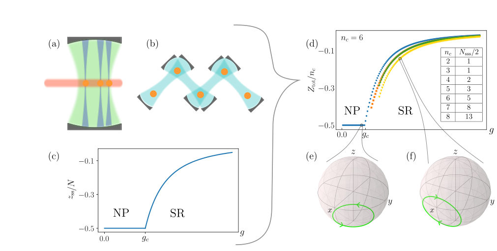
<figcaption class="paper-figure-caption"><b>Fig 1.</b> FIG. 1. (a) Schematic diagram of a confocal multimode cavity QED apparatus like those in [21, 30, 37–41]. Multiple atomic spin clusters (orange) are located at distinct positions (ri) in the central plane of the confocal cavity, and are illuminated by the transverse pumping laser (red) causing light to be scattered into the cavity. The cavity field has both a local component (blue), and a non-local component (green) through which the interactions between the spin clusters are mediated. (b) Schematic diagram of intersecting single-mode cavities (cavity fields shown in light blue), with two atomic clusters (orange) in each cavity, arranged to realize the nearest-neighbor coupling geometry of...</figcaption>
</figure>
<figure class="paper-figure-card">
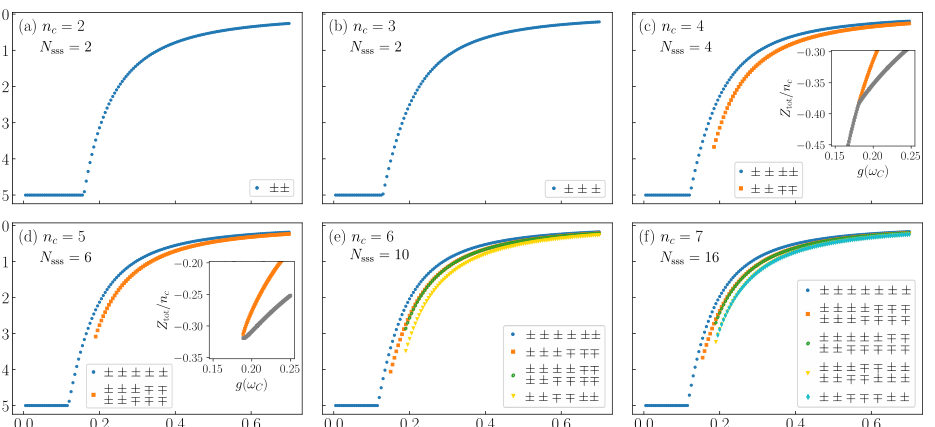
<figcaption class="paper-figure-caption"><b>Fig 2.</b> FIG. 2. Stable steady-state solutions shown through the total z-spin components scaled by the number of clusters plotted as a function of the coupling strength, g, for different values of nc. As the number of clusters in the system is increased, the number of stable steady-state solutions in the superradiant phase increases, as given by Eq. (14). The legends label the pairs of solutions based on the sign of the x-spin component of each cluster. Note that some values of Ztot correspond to multiple distinct solution pairs due to reflection symmetry about the central cluster. In addition, some of the solutions pairs that are not linked via symmetries, but have the same amount of groups of...</figcaption>
</figure>
<figure class="paper-figure-card">
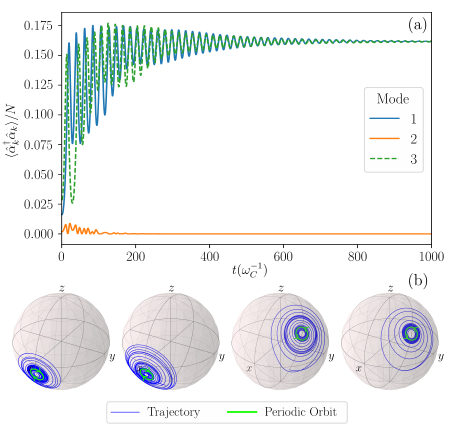
<figcaption class="paper-figure-caption"><b>Fig 3.</b> FIG. 3. Example mean-field evolution of a four cluster system towards an oscillatory steady-state solution in the superradiant phase. (a) The cavity field occupations converge to fixed values, with finite occupation in the cavity modes that connect clusters within superradiant pairs (modes 1 and 3), and with zero occupation in the cavity mode connecting two superradiant pairs (mode 2). (b) The paths traced out by the spin of each cluster on its own generalized Bloch sphere (blue) converge to closed phase space orbits (green), leading to oscillations in the spin components. The orbits for the first two clusters are identical and the orbits for the last two clusters are identical, and the two...</figcaption>
</figure>
<figure class="paper-figure-card">
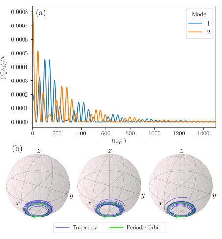
<figcaption class="paper-figure-caption"><b>Fig 4.</b> FIG. 4. Example mean-field evolution of a three cluster sys- tem towards an oscillatory steady-state solution in the normal phase. (a) The cavity field occupations for both modes con- verge to zero as expected for the normal phase. (b) The paths traced out by the spin of each cluster on its own generalized Bloch sphere (blue) converge to closed phase space orbits (green), leading to oscillations in the spin components. The orbits for all three clusters trace out the same circle, but the orbit of the middle cluster is out of phase with that of the two edge clusters so that xi = −xi+1 and yi = −yi+1. The initial conditions used to generate these plots are (xi, 0, − p</figcaption>
</figure>
<figure class="paper-figure-card">
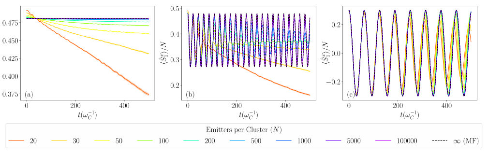
<figcaption class="paper-figure-caption"><b>Fig 5.</b> FIG. 5. Comparison of the mean-field solutions (dashed black curve) with results obtained using TWA for finite-size clusters with varying numbers of emitters per cluster. The comparison is made for the expectation value of the x-spin component of the first cluster scaled by the cluster size N. (a) Non-oscillatory superradiant steady-state solution, ± ± ± ∓∓, for five clusters. For large clusters the deviations from the mean-field solution are small indicating stability of the non-oscillatory solution even for finite-size clusters. (b) Superradiant phase oscillations for two clusters. (c) Normal phase oscillations for two clusters. Oscillations are observed in both phases even for...</figcaption>
</figure>
</div>

<p><strong>Summary.</strong> This paper analyzes the multimode Dicke model using an ordered nearest-neighbor coupling geometry realized with ultracold atoms in optical cavities. It demonstrates that the system exhibits Fibonacci scaling in the number of stable steady states within the superradiant phase, and these states can host persistent quantum oscillations. The findings are robustly confirmed by comparing mean-field results against treatments incorporating quantum fluctuations.</p>
<p><strong>Why it may be interesting.</strong> This work provides deep insights into how geometric constraints (nearest-neighbor coupling) dictate complex collective behavior, leading to mathematically rich structures like Fibonacci sequences in the number of stable solutions. The combination of mean-field theory with rigorous fluctuation treatments makes it highly relevant for modern quantum optics research.</p>
<details>
<summary>Detailed structure</summary>
<p><strong>Main problem.</strong> The study investigates the stable steady-states and persistent oscillations within the multimode Dicke model when subjected to an ordered nearest-neighbor coupling geometry.</p>
<p><strong>Main result.</strong> The number of mean-field stable steady-states in the superradiant phase exhibits Fibonacci scaling with the number of atomic clusters, and a subset of these states show persistent oscillations.</p>
<p><strong>Method.</strong> Analysis employs mean-field theory, supplemented by advanced techniques like the Truncated Wigner Approximation (TWA) to account for quantum fluctuations beyond the classical limit.</p>
<p><strong>Model / system.</strong> The system is an ordered multimode Dicke model realized using ultracold atoms in optical cavities with nearest-neighbor coupling. Dynamics are governed by a Lindblad master equation, which is simplified into an atom-only description via cavity mode elimination.</p>
<p><strong>Key observables.</strong> Stable steady-state solutions (characterized by spin components $x_i, y_i, z_i$), and the presence of persistent oscillations observed as closed orbits in phase space.</p>
<p><strong>Important parameters / regimes.</strong> The system is analyzed across a phase transition from Normal Phase to Superradiant Phase, controlled by coupling strengths ($g$) relative to critical values ($g_c$).</p>
<p><strong>Assumptions / limitations.</strong> Initial analyses rely on the mean-field limit or the TWA; stability proofs are contingent on small parameters ($\epsilon \ll 1$); the nearest-neighbor geometry is a key focus.</p>
<p><strong>Figures summary.</strong> Figures illustrate schematics of cavity setups, show multiple stable pairs of solutions exhibiting Fibonacci scaling in the superradiant phase, and depict closed orbits corresponding to persistent oscillations in both normal and superradiant regimes.</p>
<p><strong>Paper structure.</strong> The paper progresses from defining the physical model (Dicke model with ordered coupling) to deriving mean-field equations. It then analyzes stability using perturbative methods, confirming Fibonacci scaling for steady states, before extending the analysis to include quantum fluctuations via TWA to confirm persistence in finite systems.</p>
</details>
<details>
<summary>Abstract</summary>
<p>Ultracold atoms in multimode optical cavities provide a rich testbed for many-body phenomena enabled by light-mediated interactions. Recent experiments include realizations of spin glasses and associative memories, as described by multimode Dicke models with disordered couplings. However, the properties of multimode Dicke models with ordered coupling geometries remain largely unexplored. In this work, we investigate the stable steady-states of the multimode Dicke model with an ordered nearest-neighbor coupling geometry, where $n_c$ atomic clusters are coupled via $n_c-1$ cavity modes. We show that the number of mean-field stable steady-states in the superradiant phase exhibits Fibonacci scaling with the number of atomic clusters, and that a subset of these steady-states exhibit persistent oscillations. Using both the truncated Wigner approximation and the numerically-exact hierarchy of pure states, we further demonstrate that these features of the stable steady-state solutions persist for finite cluster sizes. Ordered multimode Dicke models, such as the nearest-neighbor coupling geometry considered here, are accessible with current experimental technologies and point toward a broader class of strongly interacting dissipative systems with similarly rich behavior.</p>
</details>
<p><sub><a href="#top">↑ back to top</a></sub></p>

<p><a id="paper-2606.12525"></a></p>
<h3 id="composite-quantum-geometry-and-semiclassical-dynamics">⭐ <a href="http://arxiv.org/abs/2606.12525v1">Composite Quantum Geometry and Semiclassical Dynamics</a></h3>
<p><strong>Highlighted author(s):</strong> Johannes Knolle<br>
<strong>Authors:</strong> Henry Davenport, Yoonseok Hwang, Johannes Knolle, Frank Schindler<br>
<strong>Type:</strong> theory · <strong>Category:</strong> strongly correlated electrons · <strong>PDF:</strong> <a href="https://arxiv.org/pdf/2606.12525v1">https://arxiv.org/pdf/2606.12525v1</a><br>
<strong>Analysis basis:</strong> full PDF text, analyzed in chunks
<strong>Topic relevance:</strong> <code>non-equilibrium dynamics</code> <strong>2/5</strong> · <code>Keldysh / 2PI / non-Gaussian methods</code> <strong>1/5</strong> · <code>analog quantum simulation</code> <strong>1/5</strong> · <code>driven-dissipative phase transition</code> <strong>1/5</strong> · <code>methods for driven-dissipative</code> <strong>1/5</strong></p>
<div class="figure-strip-hint">↔ Scroll figures horizontally</div>
<div class="paper-figures-scroll">
<figure class="paper-figure-card">
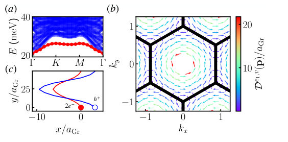
<figcaption class="paper-figure-caption"><b>Fig 1.</b> FIG. 1. Trions in MATBG at filling ν = 0, in the chiral limit w0/w1 = 0 with gate distance ξ = 20 nm [18]. (a) Trion dispersion with gapped trion away from the Γ point. (b) QGD [De1,h(p)] for the lowest energy bound trion. (c) Dynamics of trion starting at k = (0, 0.75) with applied field in ˆx direction.</figcaption>
</figure>
</div>

<p><strong>Summary.</strong> The paper develops a theoretical framework to describe the semiclassical dynamics of composite bound states, such as trions, by generalizing topological concepts like Berry curvature. It introduces the Quantum Geometric Dipole (QGD) term into the equations of motion, showing that this geometric contribution dictates unique physical behaviors, including transverse drifts, which are absent in single-particle descriptions.</p>
<p><strong>Why it may be interesting.</strong> This work provides a powerful generalization of Berry curvature physics to multi-particle excitations (composites), which is crucial for understanding transport phenomena in strongly correlated or excitonic systems where simple single-band models fail.</p>
<details>
<summary>Detailed structure</summary>
<p><strong>Main problem.</strong> The study derives semiclassical equations of motion for general composite bound states (like excitons and trions) in insulators, extending topological concepts beyond single-electron dynamics.</p>
<p><strong>Main result.</strong> The equations of motion are modified by a Quantum Geometric Dipole (QGD) term, which is necessary to describe the physics of neutral composites when an external electric field is applied. This QGD can induce unique dynamics, such as transverse drift in trions.</p>
<p><strong>Method.</strong> The authors use adiabatic approximations and gauge transformations on the Hamiltonian to derive semiclassical equations for position expectation values, generalizing concepts like Berry curvature to composite systems.</p>
<p><strong>Model / system.</strong> The model concerns composite bound states (e.g., excitons, trions) in semiconductors/insulators, analyzed using Bloch Hamiltonians and projected position operators. The analysis is extended to specific materials like magic-angle twisted bilayer graphene (MATBG).</p>
<p><strong>Key observables.</strong> Berry connection ($A_\alpha(p)$), Quantum Geometric Dipole ($D_{\alpha,eta}(p)$), and the expectation values of composite position operators $\langle \hat{R}_\alpha 
angle$.</p>
<p><strong>Important parameters / regimes.</strong> External electric field ($\mathbf{E}$), momentum ($\mathbf{p}$), and the nature of the composite (neutral vs. charged).</p>
<p><strong>Assumptions / limitations.</strong> The derivation relies on the adiabatic approximation, assuming the bound state follows instantaneous eigenstates, and involves careful handling of gauge invariance.</p>
<p><strong>Figures summary.</strong> Figures illustrate Berry curvatures ($\Omega$) and QGDs ($D$) for trions in MATBG, showing their spatial dependence across the Brillouin zone.</p>
<p><strong>Paper structure.</strong> The paper systematically derives generalized semiclassical equations of motion by first defining species-specific position operators and calculating gauge-invariant quantities like the QGD. It then applies these to analyze the dynamics of composite particles under an electric field, culminating in specific examples like trions in MATBG.</p>
</details>
<details>
<summary>Abstract</summary>
<p>We derive semiclassical equations of motion for general composite bound states in insulators and semiconductors, covering excitations such as excitons and trions. For neutral composites we find that a uniform external electric field does not couple to a Berry curvature term, contrary to the naive expectation from single-electron dynamics. Instead, a distinct quantum geometric quantity appears generically in the equations of motion. This quantity is the difference between inequivalent Berry connections that can be defined for the composite, generalising the concept of the quantum geometric dipole previously studied for excitons. In the case of charged composites such as trions, we find an additional Berry curvature contribution to the equations of motion. As we demonstrate, however, there is an infinite family of inequivalent composite Berry curvatures, and so care must be taken to make the correct choice that describes the physical dynamics. We explain how this choice should be made dependent on the definition of a spatial centre for the composite. We end by discussing composite dynamics that have no single-electron counterpart. We find that trions in magic-angle twisted bilayer graphene undergo a transverse drift under an applied electric field and that this is driven not only by the Berry curvature contribution but also by the quantum geometric dipole. The interplay of these two geometric contributions further imprints itself on the trion's internal dynamics, causing its dipole moment to oscillate in time.</p>
</details>
<p><sub><a href="#top">↑ back to top</a></sub></p>

<p><a id="paper-2606.13375"></a></p>
<h3 id="driven-dissipative-entanglement-of-distant-giant-atoms"><a href="http://arxiv.org/abs/2606.13375v1">Driven-dissipative entanglement of distant giant atoms</a></h3>
<p><strong>Authors:</strong> Aziza Almanakly, Ariadna Soro, Alejandro Vivas-Viaña, Beatriz Yankelevich, Caspar Groiseau, David Pahl, Junyoung An, Gabriel Cutter, Michael E. Gingras, Bethany M. Niedzielski, Hannah Stickler, Renée DePéncier Piñero, Mollie E. Schwartz, Kyle Serniak, Max Hays, Jeffrey A. Grover, Anton Frisk Kockum, William D. Oliver<br>
<strong>Type:</strong> experiment · <strong>Category:</strong> quantum information and computing · <strong>PDF:</strong> <a href="https://arxiv.org/pdf/2606.13375v1">https://arxiv.org/pdf/2606.13375v1</a><br>
<strong>Analysis basis:</strong> full PDF text, analyzed in chunks
<strong>Topic relevance:</strong> 🔥 <code>correlated / nonlocal dissipation</code> <strong>5/5</strong> · 🔥 <code>QC/QI experiment</code> <strong>4/5</strong> · 🔥 <code>methods for driven-dissipative</code> <strong>4/5</strong> · <code>Tavis-Cummings &amp; cavity-many-emitter</code> <strong>3/5</strong> · <code>correlated cavity matter</code> <strong>3/5</strong> · <code>driven-dissipative phase transition</code> <strong>3/5</strong> · <code>entanglement &amp; information structure</code> <strong>3/5</strong> · <code>non-equilibrium dynamics</code> <strong>3/5</strong> · <code>non-equilibrium universality</code> <strong>2/5</strong> · <code>quantum optics experiment</code> <strong>2/5</strong> · <code>Keldysh / 2PI / non-Gaussian methods</code> <strong>1/5</strong> · <code>analog quantum simulation</code> <strong>1/5</strong> · <code>interference shaping light</code> <strong>1/5</strong> · <code>measurement-induced transitions</code> <strong>1/5</strong> · <code>quantum measurements</code> <strong>1/5</strong> · <code>superradiant laser</code> <strong>1/5</strong></p>
<div class="figure-strip-hint">↔ Scroll figures horizontally</div>
<div class="paper-figures-scroll">
<figure class="paper-figure-card">
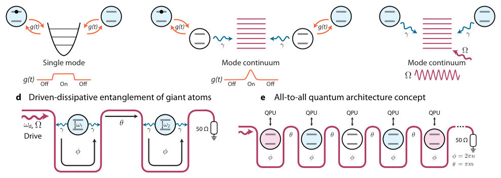
<figcaption class="paper-figure-caption"><b>Fig 1.</b> FIG. 1. The interactions underpinning remote entanglement generation. a) Coherent interactions in closed quantum systems. Remote entanglement generation is often mediated by another mode. The qubit on the left begins in the excited state. The distant qubits interact with the shared mode using a time-dependent coherent coupling g(t), resulting in a two-qubit entangled state indicated by the color blue. b) Combined coherent and dissipative interactions in open systems. Alternatively, entanglement generation schemes emit and absorb itinerant photons into a mode continuum, such as in waveguide. These approaches combine dissipation (γ) and time-dependent coherent interactions (g(t)) to precisely...</figcaption>
</figure>
<figure class="paper-figure-card">
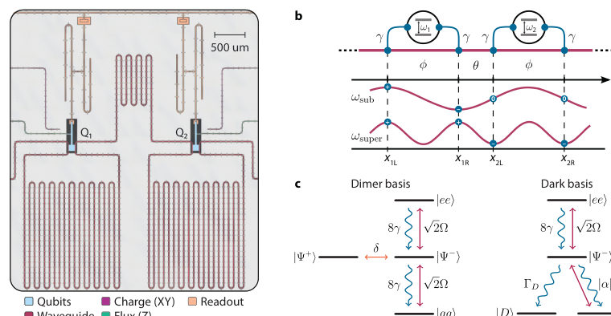
<figcaption class="paper-figure-caption"><b>Fig 2.</b> FIG. 2. Sequential giant atoms device and experimental set up. a) False-colored optical micrograph of the device. Giant atoms are realized using transmon qubits (light blue) coupled twice with strength γ to a common waveguide (red). XY (purple) and Z (green) control lines and dispersive readout circuitry (orange) enable in situ qubit tuning and state characterization. b) Schematic of the sequential giant-atom configuration. The phase difference between the coupling points of an individual atom is ϕ(ω) = ω(x1R −x1L)/ν = ω(x2R −x2L)/ν, while the phase separating the atoms is θ(ω) = ω(x2L −x1R)/ν, where ν is the speed of light in the waveguide. For qubit frequency ω = ωsub [ϕ(ωsub) = π(2n +...</figcaption>
</figure>
<figure class="paper-figure-card">
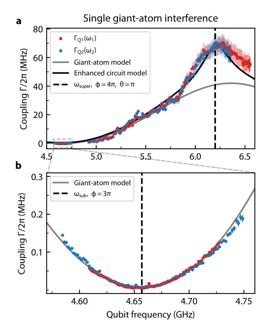
<figcaption class="paper-figure-caption"><b>Fig 3.</b> FIG. 3. Single giant-atom superradiance and sub- radiance. a) Individual waveguide coupling rates ΓQ1(ω1) and ΓQ2(ω2) across the qubit spectrum. For large cou- plings, decay rates are extracted from waveguide transmis- sion spectroscopy while the other qubit idles at the subradi- ant frequency ωsub/2π = 4.656 GHz. We observe superradi- ance, or maximal waveguide coupling, of the individual giant atoms at ωsuper/2π = 6.208 GHz and determine the value of the individual waveguide coupling points Γ(ωsuper)/8π = γ(ωsuper)/2π ≈14.7 MHz. We fit the Γ1(ω1) data to an en- hanced circuit model that combines the expected giant-atom dissipation spectrum in Eq. (1) with a Lorentzian response to a low-Q...</figcaption>
</figure>
<figure class="paper-figure-card">
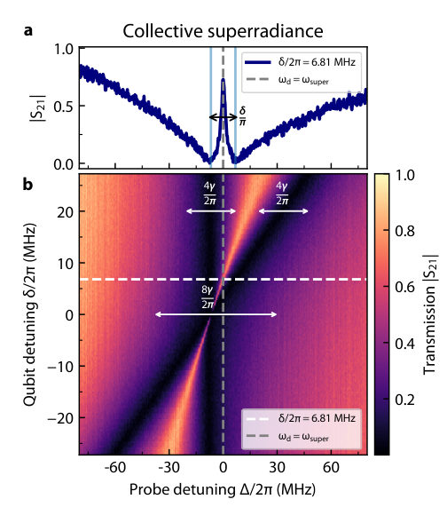
<figcaption class="paper-figure-caption"><b>Fig 4.</b> FIG. 4. Collective superradiance. a) Waveguide trans- mission spectroscopy of the giant atoms each detuned by δ/2π = 6.81 MHz from the superradiant frequency ωsuper = 6.208 GHz, where ∆is the detuning of the transmission probe frequency from ωsuper. To begin the driven-dissipative entan- glement generation protocol, we operate the qubits in this fre- quency configuration and input a coherent drive at frequency ωd = ωsuper through the waveguide. b) Collective superra- diant crossing. We measure transmission as a function of qubit detuning δ near ωsuper. At zero detuning (δ = 0), the qubits exhibit collective superradiance, characterized by an enhanced linewidth of 8γ(ωsuper).</figcaption>
</figure>
<figure class="paper-figure-card">
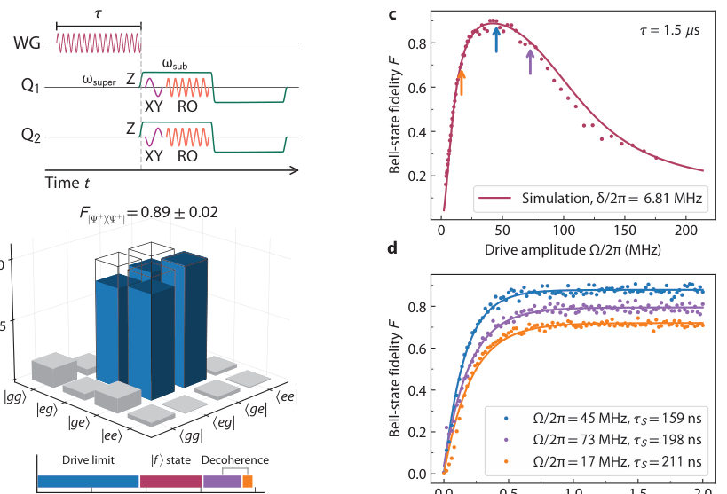
<figcaption class="paper-figure-caption"><b>Fig 5.</b> FIG. 5. Driven-dissipative entanglement generation using giant atoms. a) Experimental pulse scheme. Starting with qubits near ωsuper, a coherent drive of amplitude Ωis applied at frequency ωd = ωsuper for time duration τ. Upon reaching steady state, the qubits are flux-tuned (Z, green) to ωsub to decouple the atoms from the waveguide, protecting the generated entangled state. We perform qubit state tomography using XY pulses (purple) and dispersive readout (orange) to quantify the Bell-state fidelity. To mitigate flux transients, we implement net-zero predistorted flux pulses. b) Average Bell-state fidelity. For Ω/2π = 45 MHz and τ = 1.5 µs, we measure an average fidelity F = 0.89 ± 0.02...</figcaption>
</figure>
</div>

<p><strong>Summary.</strong> The research demonstrates the generation and preservation of remote entanglement between two distant superconducting giant atoms using driven-dissipative protocols. By continuously driving the coupled system, they exploit correlated dissipation to create an entangled state, which is then protected by tuning the qubit frequencies away from the high-dissipation regime. This proves that engineered dissipation is a robust pathway for quantum network distribution.</p>
<p><strong>Why it may be interesting.</strong> This work provides an experimental realization of reservoir engineering principles—using engineered dissipation to drive a quantum system into a desired entangled steady state—which is highly relevant for building scalable quantum networks.</p>
<details>
<summary>Detailed structure</summary>
<p><strong>Main problem.</strong> The primary goal is demonstrating a viable method for distributing entanglement across quantum networks using driven-dissipative protocols, contrasting with traditional coherent methods.</p>
<p><strong>Main result.</strong> The authors successfully generated remote entanglement between two distant giant atoms, achieving a Bell-state fidelity of $F = 0.89 \pm 0.02$.</p>
<p><strong>Method.</strong> Entanglement is generated by continuously driving the superconducting system through the waveguide, exploiting correlated dissipation, followed by in situ frequency tuning to preserve the entangled state.</p>
<p><strong>Model / system.</strong> The physical platform is a superconducting circuit containing two giant artificial atoms coupled sequentially to a waveguide (wQED setup). The dynamics are modeled using master equations incorporating tunable individual and correlated dissipation via interference effects (superradiance/subradiance).</p>
<p><strong>Key observables.</strong> Bell-state fidelity ($F$), Concurrence ($C$), transmission spectrum $|S_{21}|$, and qubit decay rates ($\Gamma$).</p>
<p><strong>Important parameters / regimes.</strong> Optimal drive amplitude ($\Omega/2\pi = 45 	ext{ MHz}$), stabilization time $  au$, and the ratio of coupling strengths to dissipation rates.</p>
<p><strong>Assumptions / limitations.</strong> The primary assumption is that suppressing individual dissipation post-generation (by tuning to subradiant states) is sufficient to preserve entanglement, despite the initial dissipative generation mechanism.</p>
<p><strong>Figures summary.</strong> Figures illustrate various entanglement schemes (coherent vs. driven-dissipative), show spectroscopy measurements of single and two atoms, and plot fidelity dependence on drive amplitude ($\Omega$) and time ($    au$).</p>
<p><strong>Paper structure.</strong> The paper progresses from establishing the need for dissipative protocols to detailing the physical system (giant atoms in a waveguide), demonstrating entanglement generation via driving near superradiance, and finally showing state preservation by tuning into protected subradiant states.</p>
</details>
<details>
<summary>Abstract</summary>
<p>Quantum interconnects distribute entanglement via controlled light-matter interactions for quantum computing and sensing applications. Many entanglement generation schemes use coherent, reversible interactions that require precisely calibrated pulses to execute. In contrast, driven-dissipative protocols use a continuous-wave drive in the presence of correlated dissipation to stabilize entanglement in protected (dark) states. However, the same dissipation that generates the entanglement also limits its utility once the stabilization protocol ends. Here, we engineer a superconducting system of two giant artificial atoms coupled sequentially to a waveguide, with tunable individual and correlated dissipation enabled by interference between coupling points. Continuously driving the atoms through the waveguide exploits correlated dissipation to generate remote entanglement. We then tune the qubit frequencies in situ to suppress individual dissipation and thereby preserve the entanglement, achieving a Bell-state fidelity F = 0.89 +/- 0.02. This demonstration indicates that the driven dissipation of giant atoms is a viable approach for distributing entanglement across quantum networks.</p>
</details>
<p><sub><a href="#top">↑ back to top</a></sub></p>

<p><a id="paper-2606.13200"></a></p>
<h3 id="interference-of-critical-dynamics-associated-with-zero-modes"><a href="http://arxiv.org/abs/2606.13200v1">Interference of critical dynamics associated with zero modes</a></h3>
<p><strong>Authors:</strong> Zhi-Han Zhang, Han-Chuan Kou, Peng Li<br>
<strong>Type:</strong> theory · <strong>Category:</strong> statistical mechanics · <strong>PDF:</strong> <a href="https://arxiv.org/pdf/2606.13200v1">https://arxiv.org/pdf/2606.13200v1</a><br>
<strong>Analysis basis:</strong> full PDF text, analyzed in chunks
<strong>Topic relevance:</strong> 🔥 <code>non-equilibrium dynamics</code> <strong>5/5</strong> · 🔥 <code>analog quantum simulation</code> <strong>4/5</strong> · 🔥 <code>non-equilibrium universality</code> <strong>4/5</strong> · <code>Keldysh / 2PI / non-Gaussian methods</code> <strong>3/5</strong> · <code>driven-dissipative phase transition</code> <strong>3/5</strong> · <code>methods for driven-dissipative</code> <strong>3/5</strong> · <code>Frenkel-Kontorova</code> <strong>1/5</strong> · <code>correlated / nonlocal dissipation</code> <strong>1/5</strong> · <code>entanglement &amp; information structure</code> <strong>1/5</strong> · <code>interference shaping light</code> <strong>1/5</strong></p>
<div class="figure-strip-hint">↔ Scroll figures horizontally</div>
<div class="paper-figures-scroll">
<figure class="paper-figure-card">
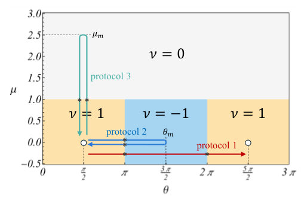
<figcaption class="paper-figure-caption"><b>Fig 1.</b> FIG. 1. Phase diagram and quench protocols of the gener- alized Creutz ladders with ϕ = 0 and JX = JD = K. The vertical axis is µ = JY /(2K). The colored regions are labeled by the winding number ν. The equivalent solvable endpoints θ = π/2, µ = 0 and θ = 5π/2, µ = 0 host OBC zero modes exactly localized on boundary rungs. In protocol 1, θ is varied from π/2 to 5π/2 at fixed µ = 0. In protocol 2, θ is varied from π/2 to the turning point θm = 3π/2 and then back to π/2 at fixed µ = 0. In protocol 3, µ is varied from 0 to the turning point µm = 2.5 and then back to 0 at fixed θ = π/2. Small offsets of the arrows are used only for visibility. Aster- isks (*) denote the critical points where...</figcaption>
</figure>
<figure class="paper-figure-card">
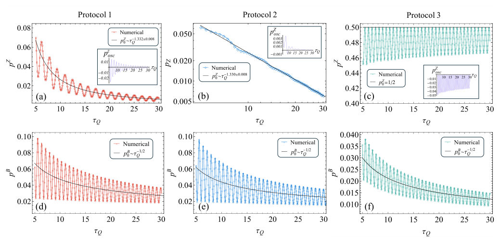
<figcaption class="paper-figure-caption"><b>Fig 2.</b> FIG. 2. Zero-mode transfer probability pZ and bulk excitation density pB for the three quench protocols. (a)-(c) Zero-mode transfer probability pZ. The black curves denote the smooth component pZ 0, and the insets show the oscillatory part pZ osc. (d)-(f) Bulk excitation density pB. The black curves show the KZ scaling pB 0 ∼τ −1/2 Q . Panels (a,d), (b,e), (c,f) correspond to protocols 1, 2, and 3, respectively. The numerical parameters are L = 500, K = 1, and R = 1.</figcaption>
</figure>
<figure class="paper-figure-card">
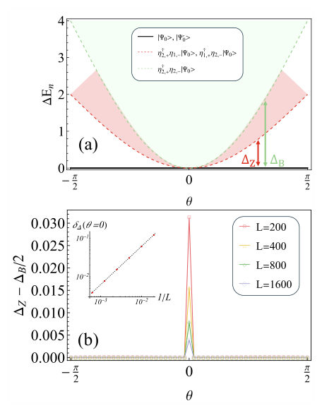
<figcaption class="paper-figure-caption"><b>Fig 3.</b> FIG. 3. Relation between the OBC energy gap and the PBC bulk gap. (a) Many-body energy level structure. The red dashed line denotes the energy of the two degenerate excited states, η† 2,+η1,−|Ψ0⟩and η† 1,+η2,−|Ψ0⟩, which mark the low- est energy bound of excitations involving zero modes, namely the OBC energy gap∆Z = E2,+ + E1,−≃E2,+. The green dashed line corresponds to the energy of the excited state, η† 2,+η2,−|Ψ0⟩, with bulk gap ∆B = E2,+ +E2,−= 2E2,+. The light red region marks excitations with zero modes, while the light green region marks bulk many-body excitations under PBC. (b) Difference between the OBC energy gap and half the PBC bulk gap, ∆Z −∆B/2, as a function of the quench...</figcaption>
</figure>
<figure class="paper-figure-card">
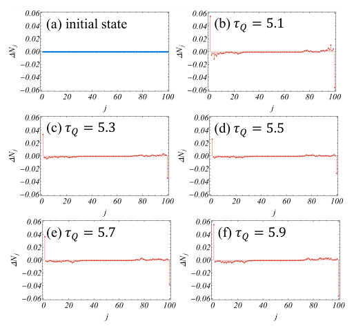
<figcaption class="paper-figure-caption"><b>Fig 4.</b> FIG. 4. Deviations of the particle number produced in protocol 1. (a) Reference profile from the initial state, for which ∆Nj = 0. (b)-(f) Deviations of the particle number ∆Nj = N i j −N f j for τQ = 5.1, 5.3, 5.5, 5.7, and 5.9, respec- tively. The left edge defect is the first-rung value dleft = ∆N1.</figcaption>
</figure>
<figure class="paper-figure-card">

<figcaption class="paper-figure-caption"><b>Fig 5.</b> Figure 4 shows the spatial profile of ∆Nj in protocol 1. The deviation of the particle number is concentrated near the two boundaries, while the bulk rungs remain close to their initial value. The first-rung value gives dleft, which is the boundary response associated with the initially occupied zero mode in |Ψ0⟩. Together with the pair-occupatthe decrease of the particle number at the left boundary can be interpreted as the transfer proba- bility of the selected zero mode. Figure 5(a) compares dleft with pZ in protocol 1. The two quantities have the same oscillatory structure as functions of τQ. This means that the boundary particle- number change reproduces the ICDZM oscillation of the...</figcaption>
</figure>
</div>

<p><strong>Summary.</strong> This paper investigates how interference effects associated with zero modes manifest during rapid changes (quenches) in a lattice model. By analyzing the zero-mode transfer probability and edge defects, the authors show that these observables act as sensitive probes of critical dynamics. The results quantitatively link observed interference patterns, such as period doubling, to the accumulated phase acquired by the system's Hamiltonian along the quench path.</p>
<p><strong>Why it may be interesting.</strong> This work provides a detailed theoretical framework connecting non-equilibrium dynamics (quenches) with topological properties (zero modes). The ability to predict specific oscillatory behaviors like period doubling based on path topology is highly relevant for designing quantum simulation protocols.</p>
<details>
<summary>Detailed structure</summary>
<p><strong>Main problem.</strong> The study investigates the interference of critical dynamics associated with zero modes (ICDZM) during nonadiabatic quench processes across multiple critical points.</p>
<p><strong>Main result.</strong> The ICDZM pattern exhibits rich behavior, including period doubling when linking topologically nontrivial phases, and this phenomenon is successfully mapped onto the accumulated interference phase calculated via WKB analysis.</p>
<p><strong>Method.</strong> The authors employ time-dependent quantum mechanics, utilizing quench protocols through parameter space paths. Key calculations involve WKB approximation to determine the accumulated interference phase ($\Delta\varphi$) governing the zero-mode transfer probability ($p_Z$).</p>
<p><strong>Model / system.</strong> The system is modeled using generalized Creutz ladders described by an OBC Hamiltonian involving hopping amplitudes and phases. The dynamics are controlled by varying parameters like $    heta$ or $\mu$, leading to topological phase transitions.</p>
<p><strong>Key observables.</strong> Zero-mode transfer probability ($p_Z$), edge defect ($    ext{d}_{    ext{left}}$), bulk excitation density ($p_B$), and the interference period ($T$).</p>
<p><strong>Important parameters / regimes.</strong> Quench path parameters ($   heta, \mu$), quench time scale ($ au_Q$), and system coupling constants ($K, J_X, J_Y$).</p>
<p><strong>Assumptions / limitations.</strong> The analysis heavily relies on WKB approximations for calculating the interference phase in both bulk and edge observables. The Hamiltonian is assumed to be quadratic in single-particle operators.</p>
<p><strong>Figures summary.</strong> Figures compare $p_Z$ and $   ext{d}_{    ext{left}}$ across different quench protocols, showing oscillatory patterns, period doubling ($T_Z \simeq 2T_B$), and power-law decay for one-way quenches. Other figures illustrate the energy gap structure ($\Delta_Z$ vs $\Delta_B$) and phase accumulation integrals.</p>
<p><strong>Paper structure.</strong> The paper systematically analyzes three quench protocols (varying $    heta$ or $\mu$). It first establishes the connection between $p_Z$, edge defects, and ICDZM. Subsequently, it uses WKB analysis to derive quantitative relationships for the interference phase ($\Delta\varphi$) and the resulting periods ($T$), confirming the dependence on topological winding numbers.</p>
</details>
<details>
<summary>Abstract</summary>
<p>We study the interference of critical dynamics associated with zero modes (ICDZM) in the generalized Creutz ladders using closed quench paths that pass through two critical points successively. By reading out the final zero-mode transfer probability, we find rich ICDZM interference patterns dependent on the quench path. In particular, when the closed path links two topologically nontrivial phases, the ICDZM pattern may either vanish or exhibit period doubling. Within the framework of WKB analysis, this phenomenon is well clarified by the interference phase accumulated in the quench procedure. We also demonstrate that the zero-mode transfer probability can be detected by the deviation of the boundary particle number from its initial fractional value, which arises from the blending of bulk modes in the critical dynamics. As an edge defect, the zero-mode transfer probability captures both the ICDZM oscillation and the known anomalous defect production in a non-closed quench path. These results identify ICDZM and the corresponding edge defect as probes for critical dynamics associated with topological zero modes.</p>
</details>
<p><sub><a href="#top">↑ back to top</a></sub></p>

<p><a id="paper-2606.13005"></a></p>
<h3 id="experiment-compatible-measurement-feedback-quantum-state-preparation-with-reinforcement-learning"><a href="http://arxiv.org/abs/2606.13005v1">Experiment-compatible measurement--feedback quantum state preparation with reinforcement learning</a></h3>
<p><strong>Authors:</strong> Xiaotian Nie, Tao Zhang, Linghui Chen<br>
<strong>Type:</strong> both · <strong>Category:</strong> quantum gases · <strong>PDF:</strong> <a href="https://arxiv.org/pdf/2606.13005v1">https://arxiv.org/pdf/2606.13005v1</a><br>
<strong>Analysis basis:</strong> full PDF text, analyzed in chunks
<strong>Topic relevance:</strong> 🔥 <code>quantum measurements</code> <strong>5/5</strong> · 🔥 <code>analog quantum simulation</code> <strong>4/5</strong> · <code>measurement-induced transitions</code> <strong>3/5</strong> · <code>methods for driven-dissipative</code> <strong>3/5</strong> · <code>entanglement &amp; information structure</code> <strong>2/5</strong> · <code>non-equilibrium dynamics</code> <strong>2/5</strong> · <code>QC/QI experiment</code> <strong>1/5</strong> · <code>correlated cavity matter</code> <strong>1/5</strong> · <code>driven-dissipative phase transition</code> <strong>1/5</strong></p>
<div class="figure-strip-hint">↔ Scroll figures horizontally</div>
<div class="paper-figures-scroll">
<figure class="paper-figure-card">
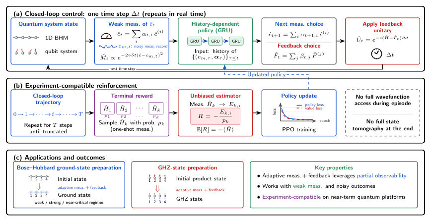
<figcaption class="paper-figure-caption"><b>Fig 1.</b> FIG. 1. Schematic of the measurement–feedback reinforcement-learning framework. (a) Closed-loop control: at each time step the system is weakly measured, a recurrent policy selects the next measurement and feedback action from the measurement record, and a feedback unitary is applied. (b) Experiment-compatible reinforcement: a terminal reward is constructed from one-shot measurements of randomly sampled Hamiltonian terms, providing an unbiased energy estimator for PPO training. (c) Applications: Bose–Hubbard ground-state preparation and GHZ-state generation.</figcaption>
</figure>
<figure class="paper-figure-card">
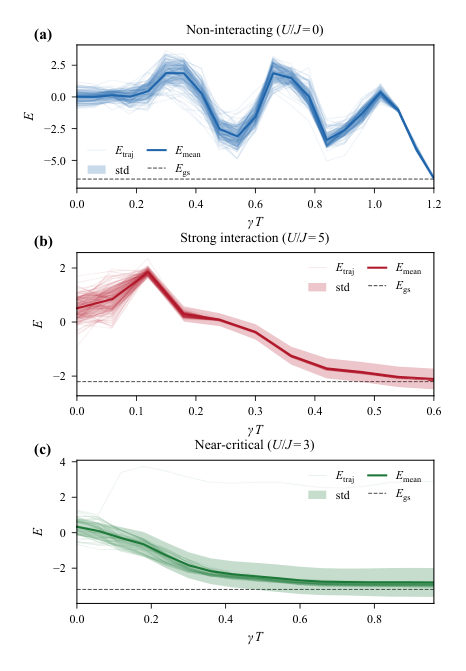
<figcaption class="paper-figure-caption"><b>Fig 2.</b> FIG. 2. Energy evolution during measurement–feedback ground-state preparation of the four-site Bose–Hubbard model at unit filling, in the (a) non-interacting (U/J = 0), (b) strong-interaction (U/J = 5), and (c) near-critical (U/J = 3) regimes, with measurement strength γ/J = 0.3. Thin col- ored lines show 100 sampled trajectories, the bold line is the ensemble mean, and the shaded region indicates ±1 standard deviation over 1000 episodes. The dashed line marks the ex- act ground-state energy Egs.</figcaption>
</figure>
<figure class="paper-figure-card">
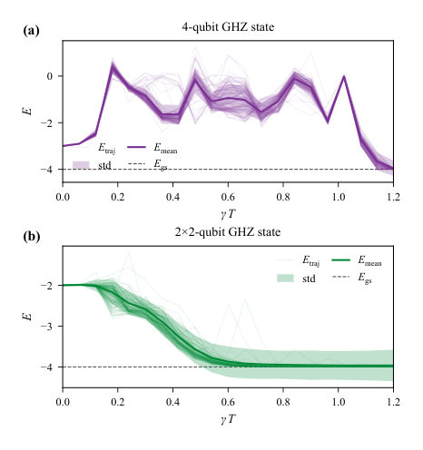
<figcaption class="paper-figure-caption"><b>Fig 3.</b> FIG. 3. Energy evolution during GHZ-state preparation via measurement–feedback control, for (a) the four-qubit GHZ state |GHZ4⟩and (b) the product |GHZ2 ⊗GHZ2⟩of two two-qubit GHZ states, with measurement strength γ = 0.3. The same plotting conventions as Fig. 2 are used. In both cases, the adaptive policy using only single-qubit Z-type mea- surements and Y -type feedback drives the energy close to Egs = −4, preparing the target entangled states with high fidelity.</figcaption>
</figure>
</div>

<p><strong>Summary.</strong> This paper presents a novel, hardware-compatible method for preparing complex quantum states, such as ground states of the Bose-Hubbard model, using reinforcement learning applied to measurement--feedback control. By utilizing only the history of measurable outcomes, the protocol bypasses the need for full state knowledge, making it highly relevant for current experimental quantum simulation platforms. The results demonstrate robust and efficient preparation across various physical regimes.</p>
<p><strong>Why it may be interesting.</strong> This work directly addresses the practical gap between theoretical quantum control schemes and experimental feasibility in cold atom/quantum gas platforms by embedding the control loop within an RL framework compatible with limited measurement data.</p>
<details>
<summary>Detailed structure</summary>
<p><strong>Main problem.</strong> Developing practical, scalable protocols for preparing target ground states in many-body systems using measurement--feedback control.</p>
<p><strong>Main result.</strong> The developed RL framework successfully drives the system to low-energy states (e.g., BHM ground state) and generates entangled states (GHZ states), outperforming fixed or handcrafted baselines.</p>
<p><strong>Method.</strong> An adaptive measurement--feedback protocol is implemented using Reinforcement Learning (RL) under partial observability, allowing real-time control based only on accessible measurement outcomes.</p>
<p><strong>Model / system.</strong> The method is demonstrated on the Bose–Hubbard model (BHM) and for generating GHZ states. The control loop involves weak measurements followed by feedback unitaries applied over discrete time steps.</p>
<p><strong>Key observables.</strong> Ground state energy ($E_{gs}$), measurement outcomes, and fidelity of generated entangled states.</p>
<p><strong>Important parameters / regimes.</strong> Measurement strength ($\gamma$), interaction ratio ($U/J$), and the training duration ($\gamma T$).</p>
<p><strong>Assumptions / limitations.</strong> The protocol is designed to operate using only experimentally accessible measurements, avoiding the need for full quantum-state reconstruction or tomography.</p>
<p><strong>Figures summary.</strong> Figures schematically illustrate the closed-loop control process at each time step, the experiment-compatible RL training setup using one-shot measurements, and applications to BHM ground-state preparation and GHZ state generation.</p>
<p><strong>Paper structure.</strong> The paper introduces the limitations of existing quantum state preparation methods, proposes the RL-based measurement--feedback framework (POMDP formulation), details the hardware-compatible reward design, and validates the method by applying it to both the Bose-Hubbard model and GHZ state generation.</p>
</details>
<details>
<summary>Abstract</summary>
<p>Ground-state preparation is a critical task in quantum simulation and quantum computing, as it enables the study of correlated phases and the generation of entangled resource states. While measurement--feedback control has emerged as a promising route to state preparation, existing schemes either rely on handcrafted, task-specific policies or are designed using full quantum-state information that is unavailable in real experiments and becomes impractical for large many-body systems. Here we develop an adaptive measurement--feedback protocol based on reinforcement learning under partial observability. The controller uses only the history of experimentally accessible measurement outcomes to choose both the measurement operator and the feedback action in real time. To make training compatible with experiments, we introduce a stochastic terminal reward built from one-shot measurements of randomly sampled Hamiltonian components, avoiding unphysical full-state reconstruction while remaining an unbiased estimator of the target energy. We demonstrate the method by preparing ground states of the Bose--Hubbard model and by generating GHZ states, establishing a scalable and hardware-compatible route to quantum state preparation.</p>
</details>
<p><sub><a href="#top">↑ back to top</a></sub></p>

<p><a id="paper-2606.13552"></a></p>
<h3 id="quantized-time-in-quantum-walks-under-weak-rank-k-measurements"><a href="http://arxiv.org/abs/2606.13552v1">Quantized time in quantum walks under weak rank-K measurements</a></h3>
<p><strong>Authors:</strong> Klaus Ziegler<br>
<strong>Type:</strong> theory · <strong>Category:</strong> other · <strong>PDF:</strong> <a href="https://arxiv.org/pdf/2606.13552v1">https://arxiv.org/pdf/2606.13552v1</a><br>
<strong>Analysis basis:</strong> full PDF text, analyzed in chunks
<strong>Topic relevance:</strong> 🔥 <code>quantum measurements</code> <strong>5/5</strong> · 🔥 <code>measurement-induced transitions</code> <strong>4/5</strong> · <code>correlated / nonlocal dissipation</code> <strong>1/5</strong> · <code>driven-dissipative phase transition</code> <strong>1/5</strong> · <code>methods for driven-dissipative</code> <strong>1/5</strong></p>
<div class="figure-strip-hint">↔ Scroll figures horizontally</div>
<div class="paper-figures-scroll">
<figure class="paper-figure-card">
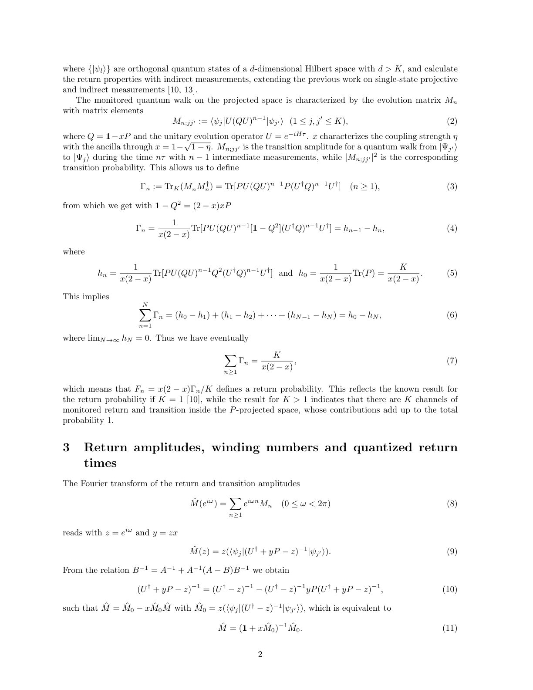
<figcaption class="paper-figure-caption"><b>Fig 1.</b> Low-resolution page preview, page 2</figcaption>
</figure>
<figure class="paper-figure-card">
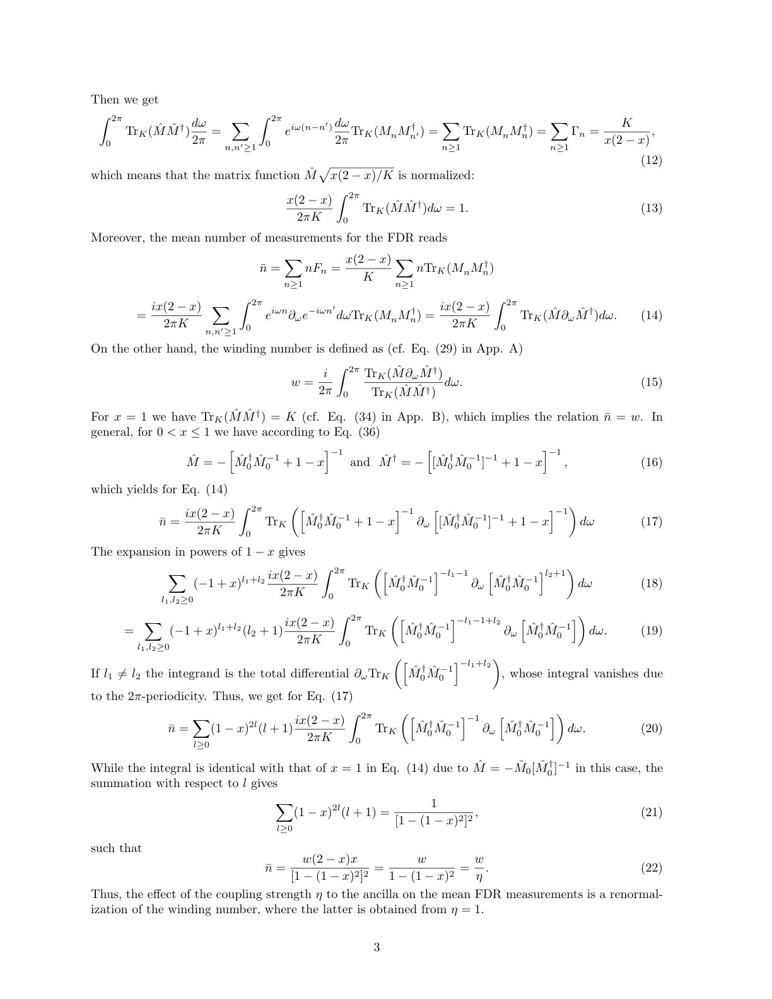
<figcaption class="paper-figure-caption"><b>Fig 2.</b> Low-resolution page preview, page 3</figcaption>
</figure>
<figure class="paper-figure-card">
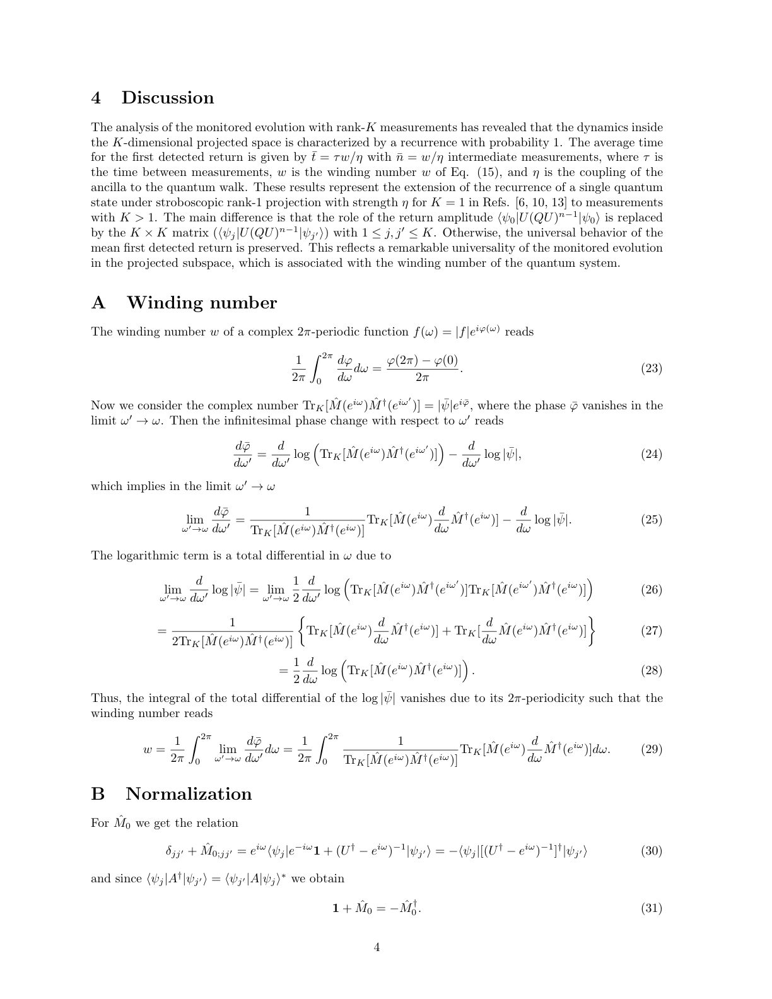
<figcaption class="paper-figure-caption"><b>Fig 3.</b> Low-resolution page preview, page 4</figcaption>
</figure>
<figure class="paper-figure-card">
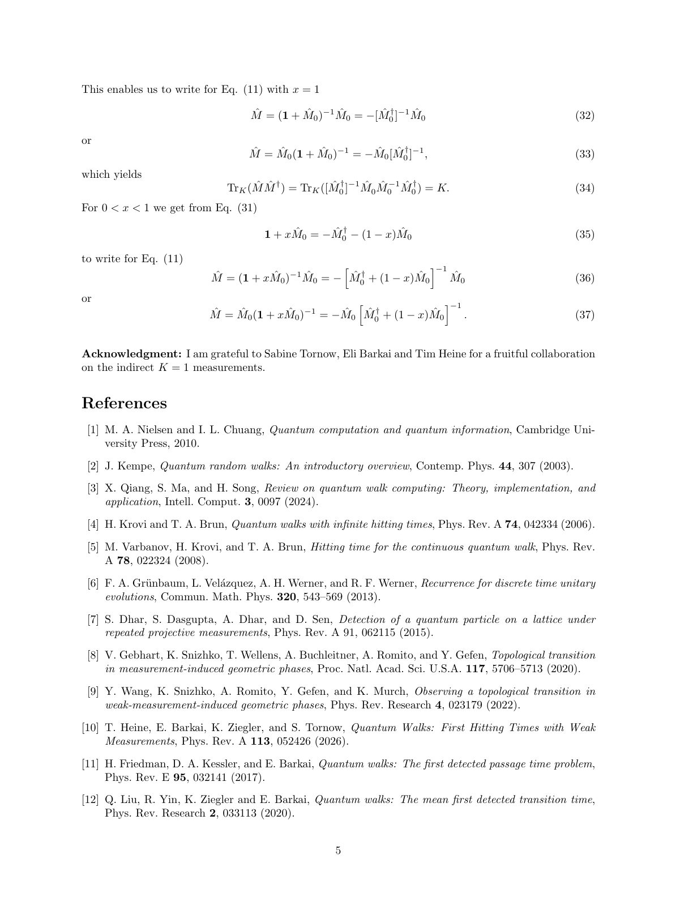
<figcaption class="paper-figure-caption"><b>Fig 4.</b> Low-resolution page preview, page 5</figcaption>
</figure>
<figure class="paper-figure-card">
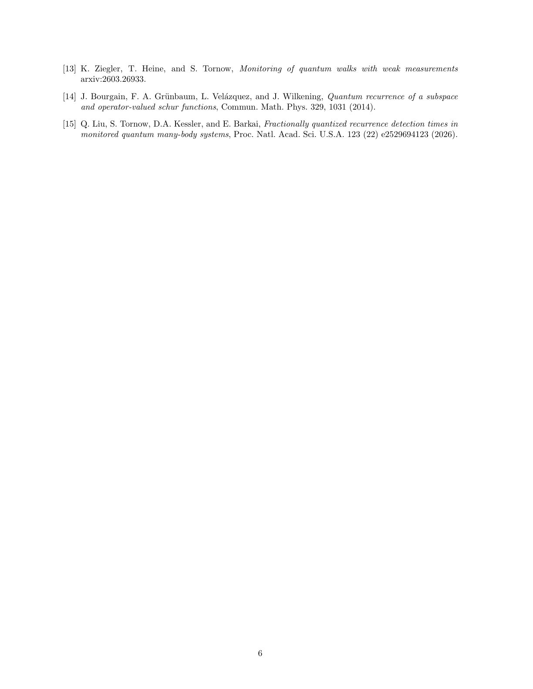
<figcaption class="paper-figure-caption"><b>Fig 5.</b> Low-resolution page preview, page 6</figcaption>
</figure>
</div>

<p><strong>Summary.</strong> This paper theoretically examines the quantization of time statistics when monitoring a quantum walk using multiple channels of weak or strong measurements. The authors demonstrate that this multi-channel monitoring preserves the universal quantization property, showing that the mean return time is proportional to the winding number divided by the coupling strength parameter. This extends fundamental results on recurrence times to higher-dimensional monitored systems.</p>
<p><strong>Why it may be interesting.</strong> This work connects fundamental concepts from quantum measurement theory (weak measurements, projection) with quantum transport phenomena (quantum walks), providing a theoretical framework for observing quantized time statistics in open quantum systems.</p>
<details>
<summary>Detailed structure</summary>
<p><strong>Main problem.</strong> The paper investigates whether monitoring a quantum walk evolution using multi-channel strong or indirect measurements leads to a universally quantized time statistic for the mean return time.</p>
<p><strong>Main result.</strong> It is shown that under such multi-channel monitoring, the mean return time of the quantum walk in the projected subspace remains quantized, suggesting universal time quantization even for higher dimensional dynamics.</p>
<p><strong>Method.</strong> The analysis involves calculating transition amplitudes using matrix elements derived from the unitary evolution operator and projecting onto a $K$-dimensional subspace defined by projectors. The key mathematical tool is relating the mean return time to the winding number of these amplitudes in the complex plane.</p>
<p><strong>Model / system.</strong> The model is a quantum walk whose evolution is monitored by repeated measurements, which can be modeled as direct projection or indirectly via an ancilla coupling. The system's dynamics are analyzed within a projected $K$-dimensional subspace.</p>
<p><strong>Key observables.</strong> Mean return time ($ar{t}$), mean number of measurements ($ar{n}$), and the winding number ($w$).</p>
<p><strong>Important parameters / regimes.</strong> The coupling strength parameter $\eta$ (or related variable $x$), and the dimension of the projected subspace, $K$.</p>
<p><strong>Assumptions / limitations.</strong> The analysis assumes orthogonal states $|\psi_l
angle$ and relies on specific algebraic manipulations involving matrix inverses.</p>
<p><strong>Paper structure.</strong> The paper builds upon known results for mean return time quantization in 1D walks ($K=1$) and extends this framework to the general case of multi-channel monitoring ($K>1$), deriving relationships between $ar{n}$, $w$, and $\eta$.</p>
</details>
<details>
<summary>Abstract</summary>
<p>Measurements can be used to monitor the evolution of quantum systems and may lead to a universally quantized time statistics. It is known that the mean return time is quantized for strong and indirect monitoring through the winding number of the return amplitude in a one-dimensional space. Here we discuss that under multi-channel strong or indirect monitoring, where the latter is achieved through ancilla coupling, the mean return time of a quantum walk in the projected subspace is also quantized. This reflects a universal time quantization for a higher dimensional evolution.</p>
</details>
<p><sub><a href="#top">↑ back to top</a></sub></p>

<p><a id="paper-2606.12682"></a></p>
<h3 id="supersymmetry-of-dissipative-bose-fermi-systems-with-application-to-jaynes-cummings-and-dicke-models"><a href="http://arxiv.org/abs/2606.12682v1">Supersymmetry of dissipative Bose-Fermi systems with application to Jaynes-Cummings and Dicke models</a></h3>
<p><strong>Authors:</strong> Colin V. Coane, Francesco Iachello<br>
<strong>Type:</strong> theory · <strong>Category:</strong> other · <strong>PDF:</strong> <a href="https://arxiv.org/pdf/2606.12682v1">https://arxiv.org/pdf/2606.12682v1</a><br>
<strong>Analysis basis:</strong> full PDF text, analyzed in chunks
<strong>Topic relevance:</strong> 🔥 <code>Tavis-Cummings &amp; cavity-many-emitter</code> <strong>4/5</strong> · 🔥 <code>methods for driven-dissipative</code> <strong>4/5</strong> · <code>Dicke superradiance</code> <strong>3/5</strong> · <code>analog quantum simulation</code> <strong>3/5</strong> · <code>correlated / nonlocal dissipation</code> <strong>3/5</strong> · <code>correlated cavity matter</code> <strong>3/5</strong> · <code>driven-dissipative phase transition</code> <strong>3/5</strong> · <code>non-equilibrium dynamics</code> <strong>2/5</strong> · <code>non-equilibrium universality</code> <strong>2/5</strong> · <code>superradiant laser</code> <strong>2/5</strong> · <code>Keldysh / 2PI / non-Gaussian methods</code> <strong>1/5</strong> · <code>Kondo &amp; dissipative impurity</code> <strong>1/5</strong> · <code>entanglement &amp; information structure</code> <strong>1/5</strong> · <code>exotic spin models in light-matter</code> <strong>1/5</strong></p>
<div class="figure-strip-hint">↔ Scroll figures horizontally</div>
<div class="paper-figures-scroll">
<figure class="paper-figure-card">
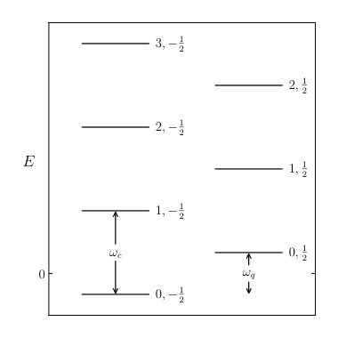
<figcaption class="paper-figure-caption"><b>Fig 1.</b> FIG. 1. Spectrum of the JC Hamiltonian for g = 0. States are labelled by nB, s.</figcaption>
</figure>
<figure class="paper-figure-card">
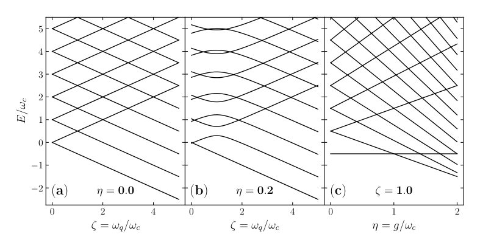
<figcaption class="paper-figure-caption"><b>Fig 2.</b> FIG. 2. (a) Behavior of the eigenvalues of HJC as a function of ζ = ωq/ωc for η = g/ωc = 0. (b) Behavior of the eigenvalues of HJC as a function of ζ for η = 0.2. (c) Behavior of the eigenvalues of HJC as a function of η = g/ωc for ζ = 1 (resonant case).</figcaption>
</figure>
<figure class="paper-figure-card">
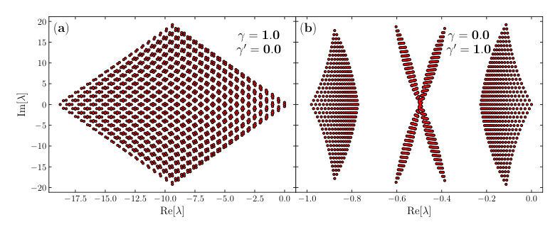
<figcaption class="paper-figure-caption"><b>Fig 3.</b> FIG. 3. Scatterplot of the Jaynes-Cummings model Liouvillian eigenvalues (ωc = 1.0, ωq = 0.5, g = 0.1) for (a) γ = 1.0, γ′ = 0, and (b) γ = 0, γ′ = 1.0. Red points are evaluated from the analytic formula, Eq. (16) and black points are numerical results with NF ock = 20.</figcaption>
</figure>
<figure class="paper-figure-card">
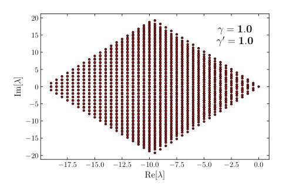
<figcaption class="paper-figure-caption"><b>Fig 4.</b> FIG. 4. Scatterplot of the Jaynes-Cummings model Liouvil- lian eigenvalues (ωc = 1.0, ωq = 0.5, g = 0.1) for γ = γ′ = 1.0, and NF ock = 20. Red points are evaluated from Eq. (18) and black points are numerical results.</figcaption>
</figure>
<figure class="paper-figure-card">
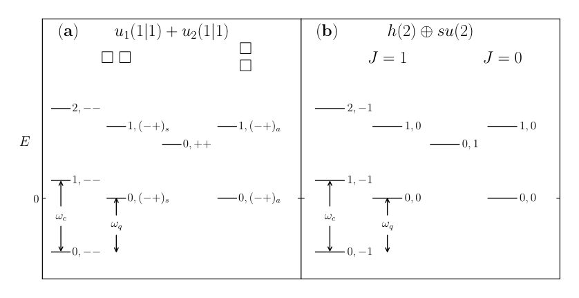
<figcaption class="paper-figure-caption"><b>Fig 5.</b> FIG. 5. The uncoupled Dicke spectrum for two qubits. (a) States in a u1(1|1) + u2(1|1) basis. (b) States in a h(2) ⊕su(2)</figcaption>
</figure>
</div>

<p><strong>Summary.</strong> This paper develops advanced theoretical techniques using supersymmetries to analytically determine the eigenvalues for both the Hamiltonian and the Liouvillian superoperator governing coupled Bose-Fermi systems like the JC and Dicke models. By exploiting underlying algebraic symmetries, the authors reduce large matrix eigenvalue problems into diagonalizing small blocks, providing exact solutions for open quantum dynamics.</p>
<p><strong>Why it may be interesting.</strong> This work provides powerful mathematical tools—leveraging supersymmetry—to solve complex open quantum system dynamics (Liouvillians) in systems central to cavity QED and quantum optics. The systematic reduction of dimensionality is highly valuable for theoretical modeling.</p>
<details>
<summary>Detailed structure</summary>
<p><strong>Main problem.</strong> The primary goal is to find explicit analytic solutions for the eigenvalues of both the Hamiltonian and the Liouvillian superoperator for various coupled Bose-Fermi systems.</p>
<p><strong>Main result.</strong> Supersymmetry methods allow the reduction of large eigenvalue problems (for both $H$ and $\mathcal{L}$) into diagonalizing small, manageable block matrices. This yields explicit analytic formulas for the eigenvalues in terms of system parameters.</p>
<p><strong>Method.</strong> The authors employ techniques from superalgebra theory ($u(n|m)$) to exploit symmetries that commute with conserved quantities (Casimir invariants). The Liouvillian is analyzed by constructing a basis and showing it takes a block-triangular form, allowing diagonalization of smaller blocks.</p>
<p><strong>Model / system.</strong> The study focuses on coupled Bose-Fermi systems, specifically applying the framework to the Jaynes-Cummings (JC) model and the Dicke model. The dynamics are described by Hamiltonians and governed by Lindblad master equations ($\partial_t
ho = \mathcal{L}
ho$).</p>
<p><strong>Key observables.</strong> Eigenvalues of the Hamiltonian ($H$) and the Liouvillian superoperator ($\mathcal{L}$); steady-state properties.</p>
<p><strong>Important parameters / regimes.</strong> Coupling strengths ($g$), cavity frequency ($\omega_c$), qubit/fermion frequency ($\omega_q$), and dissipation rates ($\gamma, \gamma'$).</p>
<p><strong>Assumptions / limitations.</strong> The analysis heavily relies on the existence of symmetries (supersymmetries) that commute with the Hamiltonian or Casimir operators, leading to block-diagonalization of the Liouvillian matrix.</p>
<p><strong>Figures summary.</strong> Figures illustrate spectral properties for JC and Dicke models, showing energy spectra in different parameter regimes and basis representations.</p>
<p><strong>Paper structure.</strong> The paper systematically develops methods by first solving the Hamiltonian spectrum using superalgebra symmetries. It then extends this methodology to the Liouvillian superoperator, deriving explicit formulas for eigenvalues by analyzing block-diagonal structures arising from bosonic and fermionic dissipation channels.</p>
</details>
<details>
<summary>Abstract</summary>
<p>We demonstrate how supersymmetries of Hamiltonians for coupled Bose-Fermi systems can be used to place the Hamiltonians of the Jaynes-Cummings model and Dicke model under the rotating wave approximation in matrix form and provide explicit analytic solutions for their eigenvalues. We then use this supersymmetry to place the Liouvillians of the associated Markovian open systems in matrix form and provide explicit solutions for their eigenvalues. These results are a consequence of the fact that the Hamiltonian of the Jaynes-Cummings model commutes with the linear Casimir invariant of the superalgebra $u(1|1)$ and that the Hamiltonian of the Dicke model commutes both with the linear invariant of $\sum_{i} u_{i}(1|1)$ and with the invariant of an additional $su(2)$ algebra. Our methods apply to various coupled Bose-Fermi systems with $u(1|1)$ and more generally with $u(n|m)$ dynamical superalgebras, and may provide efficient tools for studying more complicated examples.</p>
</details>
<p><sub><a href="#top">↑ back to top</a></sub></p>

<p><a id="paper-2606.12544"></a></p>
<h3 id="dynamical-control-of-superconductivity-in-superconductor-ferromagnet-bilayers"><a href="http://arxiv.org/abs/2606.12544v1">Dynamical Control of Superconductivity in Superconductor-Ferromagnet Bilayers</a></h3>
<p><strong>Authors:</strong> Dimitri Pimenov, Nicholas R. Poniatowski, Charlotte G. L. Bøttcher, Amir Yacoby, Debanjan Chowdhury<br>
<strong>Type:</strong> theory · <strong>Category:</strong> other · <strong>PDF:</strong> <a href="https://arxiv.org/pdf/2606.12544v1">https://arxiv.org/pdf/2606.12544v1</a><br>
<strong>Analysis basis:</strong> full PDF text, analyzed in chunks
<strong>Topic relevance:</strong> 🔥 <code>spintronics-quantum-optics interface</code> <strong>4/5</strong> · <code>Keldysh / 2PI / non-Gaussian methods</code> <strong>3/5</strong> · <code>analog quantum simulation</code> <strong>3/5</strong> · <code>driven-dissipative phase transition</code> <strong>3/5</strong> · <code>exotic spin models in light-matter</code> <strong>3/5</strong> · <code>methods for driven-dissipative</code> <strong>3/5</strong> · <code>Tavis-Cummings &amp; cavity-many-emitter</code> <strong>2/5</strong> · <code>correlated cavity matter</code> <strong>2/5</strong> · <code>non-equilibrium dynamics</code> <strong>2/5</strong> · <code>non-equilibrium universality</code> <strong>2/5</strong> · <code>correlated / nonlocal dissipation</code> <strong>1/5</strong> · <code>entanglement &amp; information structure</code> <strong>1/5</strong> · <code>interference shaping light</code> <strong>1/5</strong></p>
<div class="figure-strip-hint">↔ Scroll figures horizontally</div>
<div class="paper-figures-scroll">
<figure class="paper-figure-card">
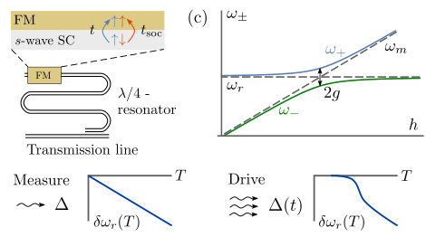
<figcaption class="paper-figure-caption"><b>Fig 1.</b> Figure 1. (a) A superconductor (SC) - ferromagnet (FM) bilayer integrated with a microwave (λ/4-) resonator, ac- cessed via a transmission line. The normal (t) and spin- orbit assisted (tsoc) tunneling induces triplet superconduct- ivity in the FM layer; see Eq. (4). (b) Left: Within linear- response, temperature-dependent shift of the resonator fre- quency δωr(T) probes the equilibrium nodal-gap ∆k of the superconductor. Right: Driving renders ∆(t) time-dependent and nodeless, modifying δωr(T). (c) Magnon-polariton dis- persion in the vicinity of a resonance where the resonator fre- quency ωr is comparable to the magnon frequency ωm, where the latter is tunable with an external magnetic...</figcaption>
</figure>
<figure class="paper-figure-card">
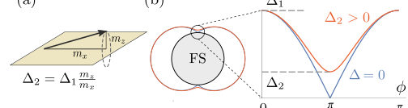
<figcaption class="paper-figure-caption"><b>Fig 2.</b> Figure 2. (a) Secondary gap component induced by an out-of- plane canting of the magnetization. (b) Sketch of the induced gap, Eq. (6b), with ϕ the angular direction along the Fermi surface.</figcaption>
</figure>
<figure class="paper-figure-card">
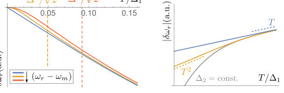
<figcaption class="paper-figure-caption"><b>Fig 3.</b> Figure 3. Cavity frequency shift δωr determined from Eq. (9): (a) “upturn” due to a temperature-independent oscillat- ory secondary gap ∆2(t) = ∆∗sin(ωdt) for decreasing values of (ωr −ωm); the dashed vertical lines show the correspond- ing time-averages ∆∗/ √</figcaption>
</figure>
<figure class="paper-figure-card">
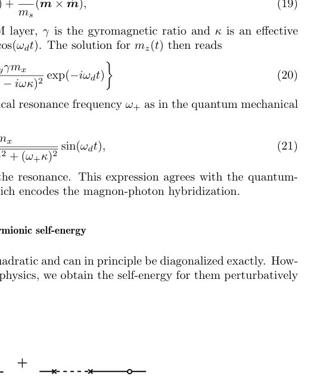
<figcaption class="paper-figure-caption"><b>Fig 4.</b> Figure 4. Perturbative evaluation of the fermionic self-energy.</figcaption>
</figure>
<figure class="paper-figure-card">
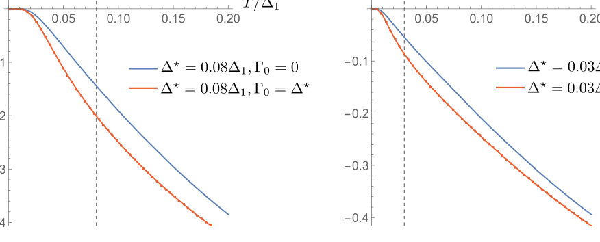
<figcaption class="paper-figure-caption"><b>Fig 5.</b> Figure 6. Π(Γ, T) ∼δωr(T) for two values of ∆2 = ∆∗, set to a constant time-independent value. The points are evaluated numerically.</figcaption>
</figure>
</div>

<p><strong>Summary.</strong> The paper theoretically explores controlling superconductivity in superconductor-ferromagnet bilayers by coupling them to an external microwave cavity. By applying a resonant drive, the system undergoes a non-equilibrium phase transition from a nodal p-wave state to a fully gapped superconducting state. This work demonstrates how coherent electromagnetic driving can be used as a tool to engineer exotic quantum phases of matter.</p>
<p><strong>Why it may be interesting.</strong> This work sits at the intersection of circuit QED and condensed matter theory, providing a framework to engineer novel quantum states (like changing gap symmetry) using coherent electromagnetic driving fields.</p>
<details>
<summary>Detailed structure</summary>
<p><strong>Main problem.</strong> The study investigates how coupling superconducting materials (SC) with ferromagnets (FM) to a microwave resonator can dynamically control the superconducting pairing symmetry.</p>
<p><strong>Main result.</strong> Driven magnon-polaritons induce a non-equilibrium crossover from an expected nodal p-wave superconductor state to a fully gapped $(p_x+ip_y)$-superconductor.</p>
<p><strong>Method.</strong> The analysis uses theoretical modeling involving coupled Bogoliubov excitations, ferromagnetic magnons, and cavity photons, often employing perturbation theory and time-averaging techniques.</p>
<p><strong>Model / system.</strong> The system is an SC-FM bilayer integrated with a microwave resonator, modeled by coupling the superconducting gap dynamics to the magnon-photon polariton modes. The low-energy excitations include magnons ($\omega_m$), Bogoliubov quasiparticles, and cavity photons ($\omega_r$).</p>
<p><strong>Key observables.</strong> The temperature-dependent shift of the cavity photon frequency, $\delta\omega_r(T)$, is used to diagnose the superconducting gap symmetry (nodal vs. nodeless).</p>
<p><strong>Important parameters / regimes.</strong> Magnon-photon detuning ($\Delta$), external drive strength ($V_d$), and temperature ($T$).</p>
<p><strong>Assumptions / limitations.</strong> The analysis often assumes weak, slow driving fields and utilizes approximations like integrating out certain degrees of freedom or using the adiabatic limit.</p>
<p><strong>Figures summary.</strong> Figures illustrate the coupled system setup (SC-FM/resonator), magnon-polariton dispersion, and theoretical predictions for $\delta\omega_r(T)$ under both equilibrium and driven conditions, highlighting characteristic power laws.</p>
<p><strong>Paper structure.</strong> The paper progresses by first establishing the coupled Hamiltonian, then analyzing the dynamics of the polaritons under external driving, which in turn dictates the non-equilibrium evolution of the superconducting pairing state ($\Delta_k$), culminating in predictions for measurable spectroscopic signatures like $\delta\omega_r(T)$.</p>
</details>
<details>
<summary>Abstract</summary>
<p>We study a simplified model of a ferromagnetic metal proximitized by a fully-gapped $s-$wave superconductor and integrated with a microwave resonator. The low-energy excitations in the combined system consist of ferromagnetic magnons, Bogoliubov excitations of the superconductor, and cavity photons. We show here that when the magnons and photons have comparable frequencies and are subject to an external drive, the hybridized driven magnon-polaritons induce a non-equilibrium crossover from the expected proximitized nodal $p-$wave superconductor to a fully gapped $(p_x+ip_y)-$superconductor. Moreover, the characteristic crossover temperature is inversely related to the magnon-photon detuning. We compute the temperature-dependent renormalization of the cavity photon frequencies across this nodal to nodeless evolution, which modifies the kinetic inductance of the resonator, and find a number of non-trivial features tied to the non-equilibrium (i.e., driven) nature of the problem. We compare and contrast these results with a recent circuit quantum electrodynamics (cQED) based experiment studying a permalloy-niobium bilayer, where a non-trivial dependence of the low-temperature cavity response on the magnon-photon detuning was observed. Our results pave the way for a principled exploration of engineering novel states of matter by coupling cavity photons to electronic collective modes in correlated two-dimensional materials and interfaces.</p>
</details>
<p><sub><a href="#top">↑ back to top</a></sub></p>

<p><a id="paper-2606.13500"></a></p>
<h3 id="thermoelectric-information-engine-driven-by-an-autonomous-maxwell-demon-across-quantum-to-classical-transitions"><a href="http://arxiv.org/abs/2606.13500v1">Thermoelectric information engine driven by an autonomous Maxwell demon across quantum-to-classical transitions</a></h3>
<p><strong>Authors:</strong> Maximiliano Bernal Santibañez, Felipe Barra, Jose Mondaca<br>
<strong>Type:</strong> theory · <strong>Category:</strong> statistical mechanics · <strong>PDF:</strong> <a href="https://arxiv.org/pdf/2606.13500v1">https://arxiv.org/pdf/2606.13500v1</a><br>
<strong>Analysis basis:</strong> full PDF text, analyzed in chunks
<strong>Topic relevance:</strong> 🔥 <code>methods for driven-dissipative</code> <strong>4/5</strong> · 🔥 <code>non-equilibrium dynamics</code> <strong>4/5</strong> · <code>Keldysh / 2PI / non-Gaussian methods</code> <strong>3/5</strong> · <code>correlated / nonlocal dissipation</code> <strong>3/5</strong> · <code>driven-dissipative phase transition</code> <strong>3/5</strong> · <code>entanglement &amp; information structure</code> <strong>3/5</strong> · <code>non-equilibrium universality</code> <strong>3/5</strong> · <code>Kondo &amp; dissipative impurity</code> <strong>2/5</strong> · <code>measurement-induced transitions</code> <strong>2/5</strong> · <code>quantum measurements</code> <strong>2/5</strong> · <code>scars &amp; prethermalization</code> <strong>1/5</strong></p>
<div class="figure-strip-hint">↔ Scroll figures horizontally</div>
<div class="paper-figures-scroll">
<figure class="paper-figure-card">
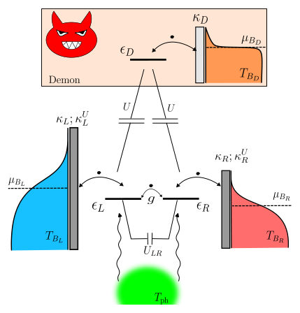
<figcaption class="paper-figure-caption"><b>Fig 1.</b> FIG. 1. Scheme of the system composed of three quan- tum dots (thick black lines), coupled via Coulomb interac- tions ULR and U, indicated by capacitors, and via coherent tunneling (g) in the case of the left (ϵL) and right (ϵR) quan- tum dots. Each site is coupled to a different bath. The left and right dots constitute the working substance and are also coupled to the phonon bath (green). Furthermore, quantum dot D (ϵD), coupled to an independent bath (orange), acts as the Maxwell demon through its interaction with the working substance.</figcaption>
</figure>
<figure class="paper-figure-card">
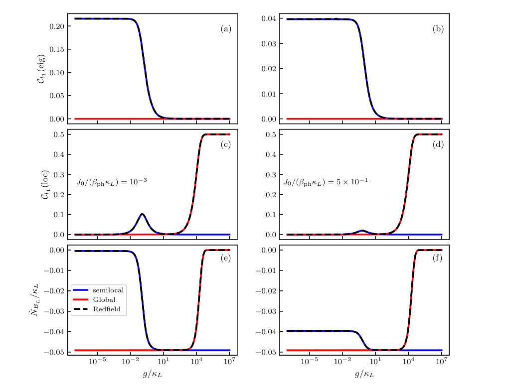
<figcaption class="paper-figure-caption"><b>Fig 2.</b> FIG. 2. Coherence in the eigen basis Cl1(eig), coherence in the local basis Cl1(loc), and particle current, for two different values of phononic coupling J0/(βphκL) = 10−3 and J0/(βphκL) = 5 × 10−1. Results are shown for the partial master equation (red), global master equation (blue), and Redfield equation(black dashed). Cl1(eig) (a)-(b), Cl1(loc) (c)-(d) and particle current ˙NBL(e)-(f) all as a function of g/κL. Parameters: κL(ϵ) = κR(ϵ + U) = 1/100, κL(ϵ + U) = κR(ϵ) = 1/600, κL/κR = 6, κD/κL = 2, T/κL = 10000, TBD/κD = 100, µL = −µR, eV/T = 1, ULR/T = 5, U/TBD = 20, βph = βBL = βBR, µBD = 2 and sites energies ϵ = 0, ϵD = µBD −U/2 .</figcaption>
</figure>
<figure class="paper-figure-card">
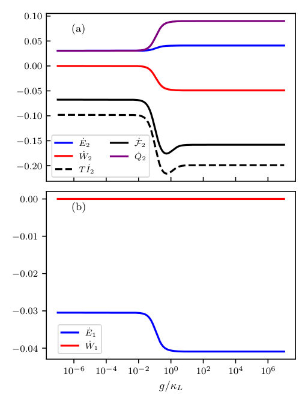
<figcaption class="paper-figure-caption"><b>Fig 3.</b> FIG. 3. (a) Energy flow, Power, contribution of information, free energy rate, heat flow by the working substance. (b) Energy flow and power ( ˙W1 = 0 =⇒ ˙E1 = ˙Q1), by the demon.</figcaption>
</figure>
<figure class="paper-figure-card">
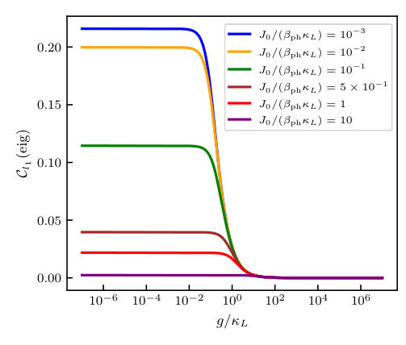
<figcaption class="paper-figure-caption"><b>Fig 4.</b> FIG. 4. Coherence Cl1(eig) versus the hopping parameter g/κL, for different values of the phonon coupling strength J0/(βphκL). Parameters: All parameters are the same of Fig. 2, except for J0/(βphκL).</figcaption>
</figure>
<figure class="paper-figure-card">
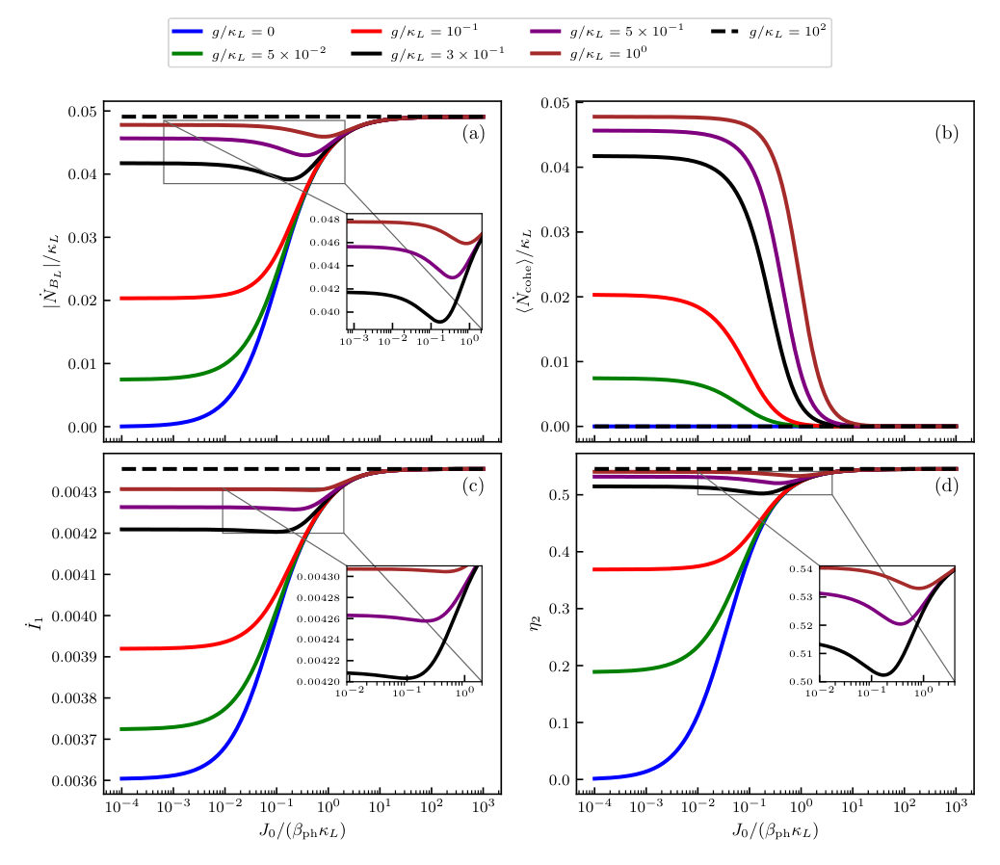
<figcaption class="paper-figure-caption"><b>Fig 5.</b> FIG. 5. (a) Absolute value of the particle current | ˙NBL|/κL versus phonon coupling J0/(βphκL), for several parameters of coherent hopping g/κL. (b) ⟨˙Ncohe⟩/κL against J0/(βphκL). (c) Information flow received by the demon ˙I1 versus phonon coupling J0/(βphκL). (d) Efficiency of the working substance η2 against J0/(βphκL). Parameters: All parameters are the same of Fig. 2, except for g/κL and J0/(βphκL).</figcaption>
</figure>
</div>

<p><strong>Summary.</strong> The paper models a three-dot thermoelectric engine acting as an information processor driven by a Maxwell demon mechanism. It rigorously analyzes the system dynamics using multiple master equation approximations to map out different quantum-to-classical transition regimes. The findings clarify the competition between coherent tunneling, decoherence from phonons, and incoherent transport in enabling energy conversion via information flow.</p>
<p><strong>Why it may be interesting.</strong> This work is highly relevant as it merges concepts from open quantum systems, non-equilibrium thermodynamics (Maxwell's demon), and quantum transport, providing a rigorous framework for understanding how coherence affects energy/information conversion in nanoscale devices.</p>
<details>
<summary>Detailed structure</summary>
<p><strong>Main problem.</strong> The study investigates a thermoelectric information engine driven by an autonomous Maxwell demon across different quantum-to-classical transition regimes.</p>
<p><strong>Main result.</strong> The model demonstrates that the system's operation as an information engine is maintained across varying coupling strengths, with coherence and decoherence playing competing roles in determining transport mechanisms.</p>
<p><strong>Method.</strong> The dynamics are analyzed using open quantum system formalisms, comparing results from Redfield master equations against two distinct Lindblad approximations (global vs. semilocal) to determine the appropriate theoretical description for different parameter regimes.</p>
<p><strong>Model / system.</strong> The physical model is a three-terminal thermoelectric engine comprising two working dots (L and R) coupled to a monitoring 'Maxwell demon' dot (D). The system interacts with fermionic reservoirs and an explicit phonon bath, leading to complex non-equilibrium dynamics.</p>
<p><strong>Key observables.</strong> Information flow ($\dot{I}$), energy/heat/work flows ($\dot{E}, \dot{Q}, \dot{W}$), coherence measures ($C_{l1}$), and the rate of entropy production ($\dot{\sigma}$).</p>
<p><strong>Important parameters / regimes.</strong> The ratio of interdot tunneling strength to bath coupling ($g/\kappa_L$) controls the crossover between dynamical regimes, while phonon coupling strength ($J_0$) drives decoherence.</p>
<p><strong>Assumptions / limitations.</strong> Key approximations include the Born-Markov limit and the use of secular/partial-secular expansions for the master equation; spinless electrons are assumed.</p>
<p><strong>Figures summary.</strong> Figures compare coherence and particle currents across parameter variations ($g/\kappa_L$ or $J_0$), illustrating how different theoretical approaches (Redfield, global, semilocal) predict transport properties in various regimes.</p>
<p><strong>Paper structure.</strong> The paper systematically analyzes the system dynamics by deriving and comparing multiple master equation formalisms based on approximations related to frequency degeneracies. It then applies these tools to calculate thermodynamic quantities like work extraction and information flow across parameter sweeps that induce quantum-to-classical crossovers.</p>
</details>
<details>
<summary>Abstract</summary>
<p>We study a three-terminal thermoelectric engine, focusing on the role of quantum coherence and information flow. A double-dot connects two reservoirs at different chemical potentials, while a third dot monitors their occupation via Coulomb interaction and can be interpreted as an autonomous Maxwell demon. Within the parameter range where the device operates as an engine, we identify conditions under which this interpretation holds. The system dynamics is described within a Redfield master equation that allows us to identify two distinct dynamical regimes with steady states well captured by suitable Lindblad approximations. These two regimes define a first quantum-to-classical transition controlled by the interdot tunneling strength. We further consider the effect of a phonon bath coupled to the double-dot, which induces a second quantum-to-classical transition by generating incoherent transport and decoherence in the small interdot tunneling regime. We identify a parameter region where phonon-induced decoherence suppresses both the coherent transport contribution and the information flow toward the monitoring dot, suggesting that coherence can enhance the demon mechanism in this regime. By tracking information and transport properties across these crossovers, our model shows how coherent tunneling, decoherence, and incoherent phonon-assisted transport compete in an autonomous information engine, while clarifying which thermodynamic Lindblad description is appropriate in each regime.</p>
</details>
<p><sub><a href="#top">↑ back to top</a></sub></p>

<p><a id="paper-2606.13470"></a></p>
<h3 id="invariant-measures-and-weak-magic-injection-asymptotics-in-random-monitored-quantum-circuits"><a href="http://arxiv.org/abs/2606.13470v1">Invariant Measures and Weak-Magic-Injection Asymptotics in Random Monitored Quantum Circuits</a></h3>
<p><strong>Authors:</strong> Guocheng Zhen, Xuanrong Yang, Chengkai Zhu, Ranyiliu Chen, Xin Wang<br>
<strong>Type:</strong> theory · <strong>Category:</strong> quantum information and computing · <strong>PDF:</strong> <a href="https://arxiv.org/pdf/2606.13470v1">https://arxiv.org/pdf/2606.13470v1</a><br>
<strong>Analysis basis:</strong> full PDF text, analyzed in chunks
<strong>Topic relevance:</strong> 🔥 <code>measurement-induced transitions</code> <strong>4/5</strong> · 🔥 <code>methods for driven-dissipative</code> <strong>4/5</strong> · <code>correlated / nonlocal dissipation</code> <strong>3/5</strong> · <code>driven-dissipative phase transition</code> <strong>3/5</strong> · <code>quantum measurements</code> <strong>3/5</strong> · <code>Keldysh / 2PI / non-Gaussian methods</code> <strong>2/5</strong> · <code>entanglement &amp; information structure</code> <strong>2/5</strong> · <code>non-equilibrium dynamics</code> <strong>2/5</strong> · <code>non-equilibrium universality</code> <strong>2/5</strong> · <code>scars &amp; prethermalization</code> <strong>1/5</strong></p>
<div class="figure-strip-hint">↔ Scroll figures horizontally</div>
<div class="paper-figures-scroll">
<figure class="paper-figure-card">
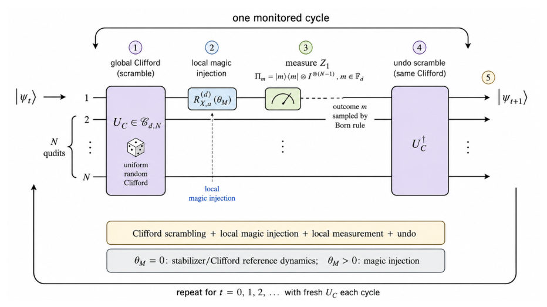
<figcaption class="paper-figure-caption"><b>Fig 1.</b> Figure 1: Schematic view of one monitored update step of the model. At time step t = 0, 1, 2, . . ., starting from a pure state |ψt⟩, the circuit draws a fresh uniform Clifford UC,t ∈Cd,N, applies the local non-Clifford rotation R(d) X,a(θM) on qudit 1, measures qudit 1 in the computational basis with projectors Πm = |m⟩⟨m| ⊗I⊗(N−1) for m ∈Fd, and then applies U † C,t. The resulting state is denoted |ψt+1⟩, and the update is repeated with an independent fresh Clifford draw at each time step.</figcaption>
</figure>
<figure class="paper-figure-card">
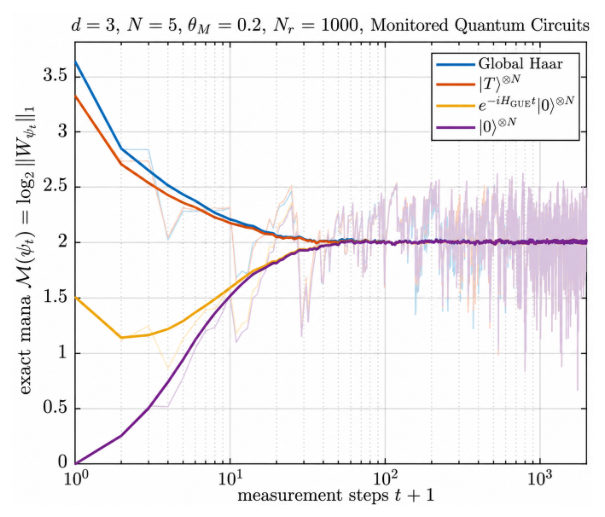
<figcaption class="paper-figure-caption"><b>Fig 2.</b> Figure 2: Numerical steady-state diagnostic for the monitored dynamics. The plot tracks exact mana at d = 3, N = 5, and θM = 0.2. Each curve is averaged over 1000 independent trajectories, initialized respectively from four ensembles following the terminology of [22]: Haar-random states; Tensor product of qutrit T-type magic states, denoted by |T⟩⊗N, with |T⟩∝|0⟩+ e2πi/9|1⟩+ e−2πi/9|2⟩; states |ψ⟩GUE = exp(−iHGUEt)|0⟩⊗N evolved with random Hamiltonian HGUE drawn from the Gaussian unitary ensemble with normalized spectrum in [−2, 2], where we choose small t = 0.1; and the computational-basis product states |0⟩⊗N.</figcaption>
</figure>
<figure class="paper-figure-card">
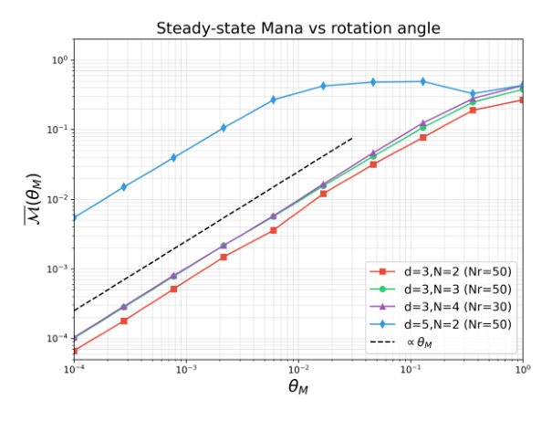
<figcaption class="paper-figure-caption"><b>Fig 3.</b> Figure 3: Odd-prime weak-magic-injection asymptotics from the computational-basis product initial state. For each displayed pair (d, N) ∈{(3, 2), (3, 3), (3, 4), (5, 2)} and each value of θM, the trajectories are initialized at |0⟩⊗N, evolved to the stationary regime, and averaged over 30 or 50 independent replicas, depending on the displayed parameter set, to estimate the stationary mana M(θM). On a log–log scale, the resulting values follow the dashed slope-one reference in the weak-magic-injection regime, supporting the linear law in Theorem D.41.</figcaption>
</figure>
<figure class="paper-figure-card">
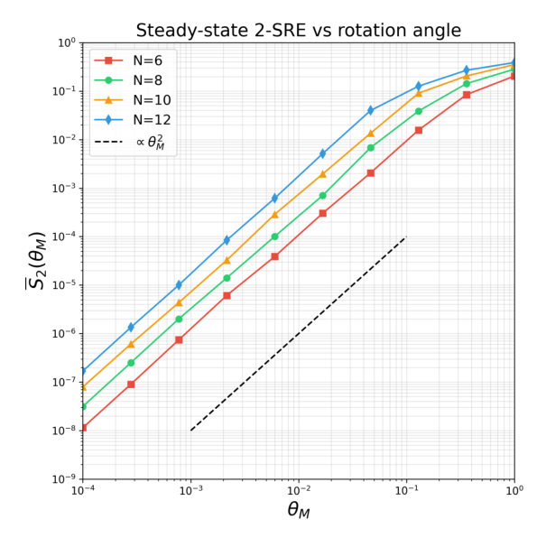
<figcaption class="paper-figure-caption"><b>Fig 4.</b> Figure 4: Qubit weak-magic-injection asymptotics from the computational-basis product initial state. For each displayed system size N ∈{6, 8, 10, 12} and each value of θM, the trajectories are initialized at |0⟩⊗N, evolved to the stationary regime, and averaged over 20–50 independent replicas, depending on the displayed parameter set, to estimate the stationary 2-SRE S2(θM). On a log–log scale, the resulting values follow the dashed slope-two reference in the weak-magic-injection regime, supporting the quadratic law in Theorem D.53.</figcaption>
</figure>
<figure class="paper-figure-card">
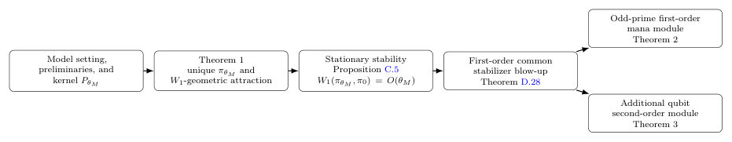
<figcaption class="paper-figure-caption"><b>Fig 5.</b> Figure 5: Schematic road map of the proof. The preliminary conventions feed into the Markov-kernel construction and the Clifford-twirl verification. The common first-order blow-up package is shared by the odd-prime mana and qubit 2-SRE response arguments, while the qubit response also requires a separate second-order module.</figcaption>
</figure>
</div>

<p><strong>Summary.</strong> This work establishes a rigorous analytical theory for random monitored quantum circuits by proving the existence of unique stationary ergodic laws. Crucially, it determines that the steady buildup of non-stabilizer 'magic' resource scales differently—linearly versus quadratically—depending on whether the underlying qudit dimension is an odd prime or exactly two (qubits).</p>
<p><strong>Why it may be interesting.</strong> It provides deep mathematical tools—like tangent space analysis and spectral gap estimates—to characterize resource accumulation in open quantum systems, which is crucial for understanding decoherence and measurement back-action in complex quantum devices.</p>
<details>
<summary>Detailed structure</summary>
<p><strong>Main problem.</strong> Developing a rigorous analytical framework to study the stationary ergodic dynamics of random monitored quantum circuits, particularly determining the leading asymptotic behavior of injected 'magic' resource.</p>
<p><strong>Main result.</strong> The steady-state magic response scales linearly with the injection strength $\theta_M$ for odd prime local dimensions ($d$), but quadratically ($\propto \theta_M^2$) for qubit systems ($d=2$).</p>
<p><strong>Method.</strong> The analysis uses quantum-trajectory ergodic theory, blow-up analysis near the stabilizer layer, and tangent dynamics expansions to resolve the weak-magic-injection limit.</p>
<p><strong>Model / system.</strong> Random Monitored Quantum Circuits acting on $N$ qudits of prime local dimension $d$. The process involves Clifford scrambling, a local non-Clifford rotation (injecting magic), measurement, and an inverse Clifford return.</p>
<p><strong>Key observables.</strong> Stationary Gross–Wigner mana (odd primes) and 2-stabilizer Rényi entropy ($S_2$) for qubits; the resource measure 'magic'.</p>
<p><strong>Important parameters / regimes.</strong> The weak-magic-injection strength $\theta_M \to 0$; the local dimension $d$ (prime); the number of qudits $N$.</p>
<p><strong>Assumptions / limitations.</strong> The analysis relies on identifying effective tangent dynamics near the stabilizer layer and assuming sufficient regularity for blow-up maps.</p>
<p><strong>Figures summary.</strong> Figures illustrate schematic circuit steps, numerical convergence to stationary states independent of initial conditions, and log-log plots confirming linear (odd $d$) or quadratic ($d=2$) scaling laws in the weak-$\theta_M$ limit.</p>
<p><strong>Paper structure.</strong> The paper progresses from establishing general ergodicity theorems for the Markov process on pure states to analyzing the asymptotic behavior by performing blow-up analysis at $\theta_M=0$, separating linear (odd $d$) and quadratic ($d=2$) scaling regimes.</p>
</details>
<details>
<summary>Abstract</summary>
<p>Monitored quantum circuits provide a natural setting in which scrambling, measurements, and measurement-conditioned updates compete within a stochastic many-body dynamics. From the viewpoint of nonstabilizer resource theory, this competition is especially relevant because Clifford-compatible operations preserve the stabilizer structure, while weak non-Clifford perturbations inject magic resource. Most of the existing understanding of monitored quantum circuits has been shaped by numerical simulations and phenomenological descriptions, while a rigorous dynamics theory remains less developed. In this paper, we address this gap by developing an analytical framework which lays a rigorous mathematical foundation for the study of random monitored quantum dynamics. Specifically, we study a class of monitored quantum circuits driven by random Clifford. We prove the existence and uniqueness of the stationary law, which gives an ergodic description of the long-time dynamics. We then resolve the leading asymptotics of steady magic in the weak-magic-injection limit. This tangent description makes the contrast between resource measures transparent: in odd-prime local dimension, the steady Gross--Wigner mana has a linear leading asymptotic, whereas in qubit systems the steady 2-stabilizer Rényi entropy has a quadratic leading asymptotic. These different powers reflect the distinct local geometries of the two resource measures near the stabilizer layer. In this way, this work develops an analytical framework that first establishes the stationary ergodic dynamics of random monitored quantum circuits.</p>
</details>
<p><sub><a href="#top">↑ back to top</a></sub></p>

<p><a id="paper-2606.13499"></a></p>
<h3 id="observation-of-non-gaussian-magnon-dynamics-in-a-two-dimensional-long-range-xy-model"><a href="http://arxiv.org/abs/2606.13499v1">Observation of Non-Gaussian Magnon Dynamics in a Two-Dimensional Long-Range XY Model</a></h3>
<p><strong>Authors:</strong> S. -A. Guo, J. -Y. Tan, J. Ye, Y. Jiang, L. Zhang, Y. -X. Chen, H. -J. Chen, H. -Y. Hu, W. -X. Guo, B. -X. Qi, L. He, Z. -C. Zhou, Y. -K. Wu, L. -M. Duan<br>
<strong>Type:</strong> both · <strong>Category:</strong> other · <strong>PDF:</strong> <a href="https://arxiv.org/pdf/2606.13499v1">https://arxiv.org/pdf/2606.13499v1</a><br>
<strong>Analysis basis:</strong> full PDF text, analyzed in chunks
<strong>Topic relevance:</strong> 🔥 <code>analog quantum simulation</code> <strong>4/5</strong> · <code>QC/QI experiment</code> <strong>3/5</strong> · <code>exotic spin models in light-matter</code> <strong>3/5</strong> · <code>non-equilibrium dynamics</code> <strong>3/5</strong> · <code>spintronics-quantum-optics interface</code> <strong>3/5</strong> · <code>Keldysh / 2PI / non-Gaussian methods</code> <strong>2/5</strong> · <code>entanglement &amp; information structure</code> <strong>2/5</strong> · <code>non-equilibrium universality</code> <strong>2/5</strong> · <code>driven-dissipative phase transition</code> <strong>1/5</strong> · <code>methods for driven-dissipative</code> <strong>1/5</strong> · <code>quantum measurements</code> <strong>1/5</strong> · <code>quantum optics experiment</code> <strong>1/5</strong></p>
<div class="figure-strip-hint">↔ Scroll figures horizontally</div>
<div class="paper-figures-scroll">
<figure class="paper-figure-card">
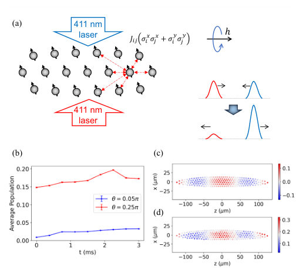
<figcaption class="paper-figure-caption"><b>Fig 1.</b> FIG. 1. (a) Experimental scheme. We apply counter- propagating 411 nm laser beams to realize a long-range and spatially structured interaction between ions in a 2D crystal, and a resonant microwave to generate a strong transverse field h. Under the rotating-wave approximation and a redefinition of the x and z directions, we get a long-range XY model Hamiltonian. We initialize the spins at an angle of θ from the z axis. Under the Gaussian approximation, the spin-wave ex- citations or magnons are non-interacting, while non-Gaussian interaction scatters the magnons into different directions with modified amplitudes in the dynamics, as sketched in the lower right panel. (b) Dynamics of the...</figcaption>
</figure>
<figure class="paper-figure-card">
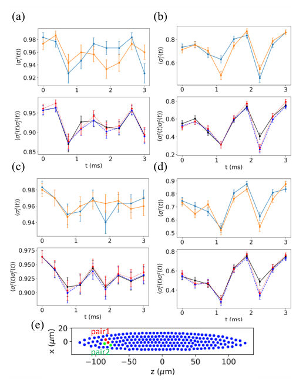
<figcaption class="paper-figure-caption"><b>Fig 2.</b> FIG. 2. Dynamics of Z-basis correlations. (a) Single-spin dynamics ⟨σz i (t)⟩(upper panel) and the two-spin correlation ⟨σz i (t)σz j (t)⟩(lower panel) for a nearby spin pair (pair 1 in (e)) starting from a low magnon density θ = 0.05π. The measured two-spin correlation (black solid curve) is compared with the mean-field solution (blue dashed) and the Wick’s theorem ex- pansion (red dotted) calculated from low-order observables. (b) Similar plots for the spin pair 1 from a high initial magnon density θ = 0.25π. (c), (d) Similar plots for a different spin pair 2 from low and high magnon densities, respectively. Each data point is averaged over 600 samples and the error bars rep- resent one...</figcaption>
</figure>
<figure class="paper-figure-card">
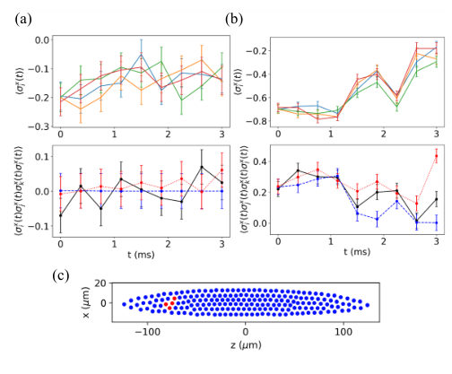
<figcaption class="paper-figure-caption"><b>Fig 3.</b> FIG. 3. Dynamics of X-basis correlations. (a) Single-spin dynamics ⟨σx i (t)⟩(upper panel) and the four-spin correlation ⟨σx i (t)σx j (t)σx k(t)σx l (t)⟩(lower panel) for a nearby group of four spins as shown in (c) starting from a low magnon den- sity θ = 0.05π. Again we compare the measured four-spin correlation (black solid) with the mean-field solution (blue dashed) and the Wick’s theorem expansion (red dotted) cal- culated from the single-spin and two-spin observables. (b) Similar plots from a high initial magnon density θ = 0.25π. Each data point is averaged over 400 samples and the error bars represent one standard error. (c) The locations of the selected ions on the 200-ion 2D...</figcaption>
</figure>
<figure class="paper-figure-card">
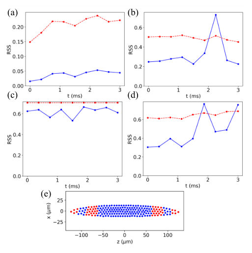
<figcaption class="paper-figure-caption"><b>Fig 4.</b> FIG. 4. (a-d) Total deviation from Gaussian dynamics under a weak (the first column) or a strong (the second column) magnon density in the two-body Z-basis correlations (the first row) or the four-body X-basis correlations (the second row). The blue solid curves show the RSS of the distance between the measured correlations and the approximations, and the red dashed curves are the RSS of the error bars. (e) Selected ions (colored in red) with the highest participation in the fifth highest phonon mode, for which we compute the correlations (see the main text for details).</figcaption>
</figure>
</div>

<p><strong>Summary.</strong> The paper reports on observing non-Gaussian dynamics in a 2D XY spin model simulated with trapped ions. By measuring high-order spin correlations and comparing them against Gaussian approximations, the authors confirm deviations that signal genuinely quantum many-body physics. This work establishes a verifiable pathway for exploring complex quantum regimes using state-of-the-art ion trap technology.</p>
<p><strong>Why it may be interesting.</strong> This work provides a crucial experimental benchmark for quantum simulation, demonstrating how to verify physics beyond the limits of mean-field or quadratic bosonic descriptions using controllable trapped-ion platforms.</p>
<details>
<summary>Detailed structure</summary>
<p><strong>Main problem.</strong> The study addresses the challenge of observing non-Gaussian dynamics in quantum many-body systems, as simple Gaussian approximations fail to capture all essential physical properties.</p>
<p><strong>Main result.</strong> The authors experimentally demonstrate a clear crossover from predictable Gaussian behavior to genuinely non-Gaussian dynamics using trapped ions under strong initial excitation conditions.</p>
<p><strong>Method.</strong> The research combines experimental measurements on spin correlations with theoretical comparisons against mean-field solutions and low-order approximations like Wick's theorem.</p>
<p><strong>Model / system.</strong> The system is a two-dimensional XY model realized using $N=200$ trapped $^{171}	ext{Yb}^+$ ions. The Hamiltonian describes long-range, spatially structured interactions between the spins.</p>
<p><strong>Key observables.</strong> Single-spin observables ($\langle\sigma_z^i(t)
angle$), two-spin correlations ($\langle\sigma_z^i(t)\sigma_z^j(t)
angle$), and four-spin correlations (in the X basis).</p>
<p><strong>Important parameters / regimes.</strong> Initial excitation strength parameter $ heta$ (tested at weak $0.05\pi$ and strong $0.25\pi$ regimes); temperature ($T=6	ext{ K}$).</p>
<p><strong>Assumptions / limitations.</strong> The analysis is robust because the non-Gaussian violation is shown to persist beyond experimental noise, independent of assumptions about Hamiltonian miscalibration or decoherence modeling.</p>
<p><strong>Figures summary.</strong> Figures compare measured two-spin correlations against mean-field and Wick's theorem predictions, showing deviations under strong excitation. Other figures detail the experimental setup using multiple laser beams for ion trapping and interaction generation.</p>
<p><strong>Paper structure.</strong> The paper details the physical realization of the XY model on trapped ions, presents theoretical approximations (HP transformation, Wick's theorem), measures various spin correlation functions across different initial excitation regimes, and concludes by quantifying the deviation from Gaussian predictions.</p>
</details>
<details>
<summary>Abstract</summary>
<p>Non-Gaussian evolution of high-order spin correlations characterizes important properties of quantum many-body systems. In practice, decoherence, statistical fluctuation and miscalibration of experimental parameters all hinder the witness of non-Gaussian dynamics. Here we demonstrate the crossover between Gaussian and non-Gaussian dynamics on a two-dimensional XY model with long-range and spatially structured interaction using a trapped ion quantum simulator. We prepare different initial densities of magnon excitations and verify the dynamics of single-spin observables for the engineered Hamiltonian. Then we compare the high-order spin correlations with the mean-field solution and the Holstein-Primakoff approximation, and demonstrate the non-Gaussian behavior in a way independent of the calibration errors. Our work provides a verifiable path from classically simulatable dynamics to regimes where quantum advantage may emerge.</p>
</details>
<p><sub><a href="#top">↑ back to top</a></sub></p>

<p><a id="paper-2606.13645"></a></p>
<h3 id="driven-dynamics-of-an-attractive-bose-polaron"><a href="http://arxiv.org/abs/2606.13645v1">Driven dynamics of an attractive Bose polaron</a></h3>
<p><strong>Authors:</strong> Saptarshi Majumdar, Aleksandra Petković<br>
<strong>Type:</strong> theory · <strong>Category:</strong> quantum gases · <strong>PDF:</strong> <a href="https://arxiv.org/pdf/2606.13645v1">https://arxiv.org/pdf/2606.13645v1</a><br>
<strong>Analysis basis:</strong> full PDF text, analyzed in chunks
<strong>Topic relevance:</strong> 🔥 <code>non-equilibrium dynamics</code> <strong>4/5</strong> · <code>Kondo &amp; dissipative impurity</code> <strong>3/5</strong> · <code>analog quantum simulation</code> <strong>3/5</strong> · <code>methods for driven-dissipative</code> <strong>3/5</strong> · <code>non-equilibrium universality</code> <strong>3/5</strong> · <code>Frenkel-Kontorova</code> <strong>2/5</strong> · <code>Keldysh / 2PI / non-Gaussian methods</code> <strong>2/5</strong> · <code>correlated / nonlocal dissipation</code> <strong>1/5</strong> · <code>driven-dissipative phase transition</code> <strong>1/5</strong> · <code>entanglement &amp; information structure</code> <strong>1/5</strong> · <code>scars &amp; prethermalization</code> <strong>1/5</strong></p>
<div class="figure-strip-hint">↔ Scroll figures horizontally</div>
<div class="paper-figures-scroll">
<figure class="paper-figure-card">
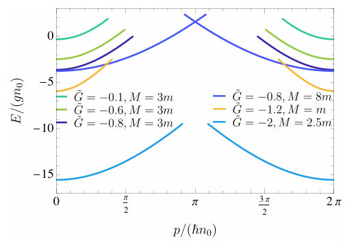
<figcaption class="paper-figure-caption"><b>Fig 1.</b> FIG. 1. The dimensionless energy (11) as a function of the momen- tum for different set of parameters. Here, γ = 0.1.</figcaption>
</figure>
<figure class="paper-figure-card">
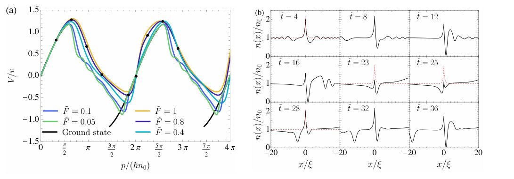
<figcaption class="paper-figure-caption"><b>Fig 2.</b> FIG. 2. (a) Impurity velocity as a function of the total momentum of the system p = ℏn0√γ ˜F ˜t for different values of dimensionless force ˜F for ˜G = −0.8, M = 3m, and γ = 0.1. The velocity periodicity is established after the first oscillation for ˜F = 0.8 and ˜F = 1. The black curve shows the ground-state impurity velocity (10) as a function of p. The black points along the velocity curve for ˜F = 0.8 denote the time-stamps at which the densities in Fig. (b) are displayed. (b) The time evolution of the density profile n(x)/n0 for ˜F = 0.8 for the aforementioned parameters. The first Vmax is reached at ˜t = 8.1, the first V = 0 at ˜t = 16.3, and the first Vmin at ˜t = 22.7. The second...</figcaption>
</figure>
<figure class="paper-figure-card">
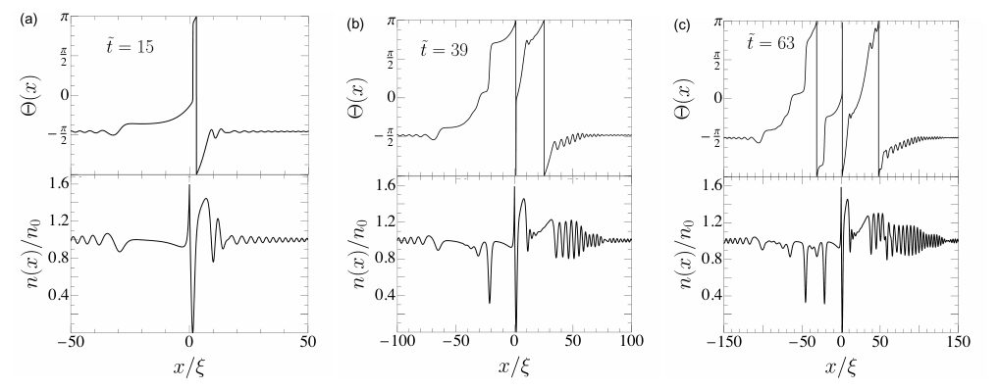
<figcaption class="paper-figure-caption"><b>Fig 3.</b> FIG. 3. Phase Θ(x) of the condensate wave-function at three time instances for ˜G = −0.8, M = 3m, ˜F = 0.8, γ = 0.1. The dimensionless time period is Tgn0/ℏ= 23.85.</figcaption>
</figure>
<figure class="paper-figure-card">

<figcaption class="paper-figure-caption"><b>Fig 4.</b> FIG. 4. The time evolution of the boson density profile n(x)/n0 over the first period of oscillation for ˜G = −0.8, M = 3m, ˜F = 0.05, and γ = 0.1. The corresponding velocity curve is shown in Fig. 2. The impurity velocity is maximal at ˜t = 116.3, while ˜t = 145 shows the emission of the density shockwave. V = 0 at ˜t = 227, V = Vmin at ˜t = 342.5, and ˜t = 397.5 the velocity reaches zero again. The red dashed plots represents the analytical stationary configurations (6) at p = Ft when they exist.</figcaption>
</figure>
<figure class="paper-figure-card">

<figcaption class="paper-figure-caption"><b>Fig 5.</b> FIG. 5. The time evolution of the boson density (blue dashed line) and phase profile (black solid line) in the vicinity of the impurity for ˜G = −0.8, M = 3m, ˜F = 0.05, and γ = 0.1. The impurity velocity is V = 0 at ˜t = 227.</figcaption>
</figure>
</div>

<p><strong>Summary.</strong> The paper analyzes the driven dynamics of an impurity polaron coupled to a 1D Bose gas with attractive interactions. It demonstrates that the system exhibits drifted Bloch oscillations and derives unique scaling laws for the drift velocity ($V_d \sim F^\alpha$ with $\alpha < 1$). The research highlights how interaction strength and force fundamentally alter momentum transfer mechanisms in quantum gases.</p>
<p><strong>Why it may be interesting.</strong> This work provides detailed insights into non-equilibrium transport phenomena in quantum many-body systems, particularly how attractive interactions modify fundamental dynamics like Bloch oscillations compared to repulsive cases.</p>
<details>
<summary>Detailed structure</summary>
<p><strong>Main problem.</strong> The study investigates the out-of-equilibrium dynamics of an impurity (polaron) driven by a constant external force through a 1D system of weakly-interacting bosons.</p>
<p><strong>Main result.</strong> For attractive interactions, the drift velocity exhibits a sub-linear dependence on the applied force ($V_d \sim F^\alpha$ with $\alpha < 1$), and the Bloch oscillation amplitude shows rich non-monotonic behavior (decay $
ightarrow$ minimum $
ightarrow$ revival).</p>
<p><strong>Method.</strong> The analysis combines theoretical derivations of stationary solutions in the weak coupling limit ($\gamma \ll 1$) with numerical simulations solving the time-dependent Gross-Pitaevskii equation.</p>
<p><strong>Model / system.</strong> The model is a Bose polaron system in one dimension, described by an effective Hamiltonian involving the impurity momentum and the bosonic field. The interaction between the impurity and bosons is assumed to be attractive ($G<0$).</p>
<p><strong>Key observables.</strong> Drift velocity ($V_d$), Bloch oscillation amplitude ($V_B$), oscillation period ($T$), and the total phase variation across the system.</p>
<p><strong>Important parameters / regimes.</strong> The sign of the impurity-boson interaction ($G>0$ vs $G<0$), the strength of the external force ($F$), and the mass ratio ($M/m$).</p>
<p><strong>Assumptions / limitations.</strong> The analysis relies on the weak coupling limit ($\gamma \ll 1$) and compares results derived from stationary state solutions against full time-evolution dynamics.</p>
<p><strong>Figures summary.</strong> Figures illustrate energy vs. momentum showing forbidden intervals, time evolution of velocity/density profiles demonstrating shockwave emission, and plots quantifying $V_d$, $V_B$, and $T$ dependence on the driving force $    ilde{F}$.</p>
<p><strong>Paper structure.</strong> The paper systematically analyzes the dynamics by first establishing stationary solutions at zero force, then numerically simulating time evolution under a small driving force to observe drifted Bloch oscillations, and finally characterizing the scaling laws ($V_d \propto F^\alpha$) across different force regimes.</p>
</details>
<details>
<summary>Abstract</summary>
<p>We study the out-of-equilibrium dynamics of an impurity driven by a constant external force through a system of homogeneous weakly-interacting bosons in one spatial dimension. The impurity-boson interaction is assumed to be attractive. We show that the impurity exhibits drifted Bloch oscillations in a wide range of forces in the absence of a lattice. We characterize the dynamical response of the host bosons and explain the mechanism underlying the Bloch oscillations. We analyse the behavior of the drift velocity, the Bloch amplitude and the time period of oscillations in a wide range of forces and other system parameters. In contrast to the case of repulsive impurity-boson interaction, the drift velocity exhibits a sub-linear dependence on a weak applied force, $V_d\sim {F}^α$ with a positive exponent $α$ smaller than unity. The drift velocity monotonically increases with force, though the scaling behavior varies considerably across different regimes of $F$. Moreover, the amplitude of the velocity oscillations displays rich behavior: it first undergoes a decay with force, reaches a minimum, and then presents a revival, increasing with force.</p>
</details>
<p><sub><a href="#top">↑ back to top</a></sub></p>

<p><a id="paper-2606.13085"></a></p>
<h3 id="reservoir-controlled-electromagnetically-induced-gratings-in-a-weakly-driven-two-level-medium"><a href="http://arxiv.org/abs/2606.13085v1">Reservoir-controlled electromagnetically induced gratings in a weakly driven two-level medium</a></h3>
<p><strong>Authors:</strong> Amjad Hussain, Hamid Arian Zad, Amjad Sohail, Hazrat Ali, Michal Michal Jaščur, Saeed Haddadi<br>
<strong>Type:</strong> theory · <strong>Category:</strong> other · <strong>PDF:</strong> <a href="https://arxiv.org/pdf/2606.13085v1">https://arxiv.org/pdf/2606.13085v1</a><br>
<strong>Analysis basis:</strong> full PDF text, analyzed in chunks
<strong>Topic relevance:</strong> 🔥 <code>interference shaping light</code> <strong>4/5</strong> · <code>correlated / nonlocal dissipation</code> <strong>3/5</strong> · <code>driven-dissipative phase transition</code> <strong>3/5</strong> · <code>methods for driven-dissipative</code> <strong>3/5</strong> · <code>non-equilibrium dynamics</code> <strong>3/5</strong> · <code>analog quantum simulation</code> <strong>2/5</strong> · <code>non-equilibrium universality</code> <strong>2/5</strong> · <code>Keldysh / 2PI / non-Gaussian methods</code> <strong>1/5</strong> · <code>Tavis-Cummings &amp; cavity-many-emitter</code> <strong>1/5</strong> · <code>correlated cavity matter</code> <strong>1/5</strong> · <code>quantum measurements</code> <strong>1/5</strong></p>
<div class="figure-strip-hint">↔ Scroll figures horizontally</div>
<div class="paper-figures-scroll">
<figure class="paper-figure-card">

<figcaption class="paper-figure-caption"><b>Fig 1.</b> FIG. 1. (a) Effective two-level atomic system driven by a standing-wave control field with Rabi frequency Ωc and probed by a weak travelling field with Rabi frequency Ωp. The control-field detuning is ∆c, while the probe detuning relative to the control field is ∆p. The atom interacts with an engineered broadband reservoir characterized by mean photon number N, squeezing correlation M, and detuning δ. The reservoir coupling gives rise to the effective coherence decay rate Γ, while γ denotes spontaneous emission. (b) Spatial geometry of the induced grating. The weak probe field propagates along z through a thin medium whose susceptibility is modulated by standing-wave control fields along...</figcaption>
</figure>
<figure class="paper-figure-card">

<figcaption class="paper-figure-caption"><b>Fig 2.</b> FIG. 2. Transmission T(x) of the probe field in x- direction as a function of the spatial coordinate x for (a) the NV reservoir (N = 0) for several decay parameters η/γ = 0.2, 0.3, 0.4, 0.5, 0.6. (b) the TF reservoir (M = 0) for N = 0.05, 0.1, 0.2, 0.3, 0.4 and fixed η/γ = 0.2; and (c) the SV reservoir for N = 0.05, 0.1, 0.2, 0.3, 0.4 and η/γ = 0.2. Fixed parameters are: R/γ = 0.1, ∆c/γ = 0.2, Ωc0/γ = 0.1, L/z0 = 0.1, ∆p/γ = ϕ = 0, Nx = 5, and Λx/λp = 4.</figcaption>
</figure>
<figure class="paper-figure-card">

<figcaption class="paper-figure-caption"><b>Fig 3.</b> FIG. 3. Normalized diffraction intensity Ip(θx) as a function of sin(θx). (a) the NV reservoir for several decay parameters η/γ = 0.2, 0.3, 0.4, 0.5, 0.6. (b) the NV reservoir for fixed η/γ = 0.2 and several values of the Rabi frequency Ωc0/γ = 0.0, 0.1, 0.2, 0.3, 0.4. (c), (d) The TF and SV reservoirs for N = 0.05, 0.1, 0.2, 0.3, 0.4, assuming η/γ = 0.2 and Ωc0/γ = 0.1. Fixed parameters are:R/γ = 0.1, ∆c/γ = 0.2, Ωc0/γ = 0.1, L/z0 = 0.1, ∆p/γ = ϕ = 0, Nx = 5, and Λx/λp = 4.</figcaption>
</figure>
<figure class="paper-figure-card">

<figcaption class="paper-figure-caption"><b>Fig 4.</b> FIG. 4. Diffraction intensity for the SV reservoir with nonzero squeezed-vacuum detuning. (a) Ip(θx) versus sin(θx) for several values of δ/γ at fixed N = 0.2. (b) Contour plot of Ip(θx) in the δ/γ-N plane evaluated at sin(θ) = 0, showing the parameter region of maximum amplification. Other fixed parameters are chosen as Fig. 3.</figcaption>
</figure>
<figure class="paper-figure-card">

<figcaption class="paper-figure-caption"><b>Fig 5.</b> FIG. 5. (a), (b), (c) Two-dimensional diffraction intensity Ip(θx, θy) as a function of sin(θx) and sin(θy) for NV, TF (N = 0.2), SV (N = 0.2). (d), (e), (f) the corresponding contour plot of phase Φ/π for NV, TF, SV reservoir. Other parameters are assumed as follows: R/γ = 0.1, ∆c/γ = 0.2, Ωc0/γ = 0.1, L/z0 = 0.1, ∆p/γ = ϕ = 0, Nx = Ny = 5 and Λx/λp = Λy/λp = 4.</figcaption>
</figure>
</div>

<p><strong>Summary.</strong> The paper theoretically explores controlling light propagation through an electromagnetically induced grating by coupling the system to different quantum reservoirs. It demonstrates that while thermal environments enhance overall modulation, squeezed vacuum reservoirs offer superior control, enabling highly selective amplification of specific diffracted angles via detuning. This establishes reservoir engineering as a versatile platform for programmable photonic devices.</p>
<p><strong>Why it may be interesting.</strong> This work directly addresses open quantum systems dynamics in nonlinear optics, showing how engineered environmental coupling (reservoir engineering) provides a powerful tool to control macroscopic wave phenomena like diffraction efficiency and directionality.</p>
<details>
<summary>Detailed structure</summary>
<p><strong>Main problem.</strong> The study investigates how coupling a two-level medium, forming an electromagnetically induced grating (EIG), to engineered quantum reservoirs modifies the transmission and far-field diffraction of a weak probe field.</p>
<p><strong>Main result.</strong> Reservoir statistics—specifically thermal vs. squeezed vacuum—significantly control the diffraction response; squeezing allows for highly directional power redistribution and amplification via detuning control.</p>
<p><strong>Method.</strong> The analysis uses perturbative solutions to the optical Bloch equations in the weak-driving regime, followed by calculating the linear susceptibility and applying Fraunhofer diffraction theory.</p>
<p><strong>Model / system.</strong> The system models an ensemble of two-level atoms driven by a standing-wave field and interrogated by a probe field, coupled to engineered reservoirs (Normal Vacuum, Thermal Field, or Squeezed Vacuum).</p>
<p><strong>Key observables.</strong> Probe susceptibility ($\chi$), spatial transmission function $T(x)$, and far-field diffraction intensity patterns $I_p(	heta_x, 	heta_y)$.</p>
<p><strong>Important parameters / regimes.</strong> Reservoir type (NV, TF, SV), reservoir detuning ($\delta/\gamma$), mean photon number ($N$), and the strength of the driving fields.</p>
<p><strong>Assumptions / limitations.</strong> The analysis relies on a weak probe field assumption, utilizing Born–Markov and rotating-wave approximations to derive the effective Bloch equations.</p>
<p><strong>Figures summary.</strong> Figures illustrate $T(x)$ for different reservoirs (NV, TF, SV) and show 1D/2D diffraction intensities demonstrating how reservoir parameters control spectral components and angular distribution.</p>
<p><strong>Paper structure.</strong> The paper first introduces the theoretical model and derives the necessary Bloch equations. It then presents numerical results analyzing 1D and 2D EIGs under various reservoir conditions, concluding with a discussion of applications like beam steering.</p>
</details>
<details>
<summary>Abstract</summary>
<p>We theoretically investigate the transmission and diffraction of a weak probe field from an electromagnetically induced grating formed in a weakly driven two-level medium coupled to engineered quantum reservoirs. Using a perturbative solution of the optical Bloch equations in the weak-driving regime, we analyze how normal-vacuum, thermal, and broadband squeezed-vacuum environments modify the probe susceptibility and consequently reshape both the spatial transmission function and the far-field diffraction patterns. We show that reservoir statistics have a pronounced impact on the diffraction response by altering the amplitude and phase of the induced grating. Thermal reservoirs enhance the transmission modulation and increase the intensity of the dominant diffraction orders, whereas squeezed-vacuum reservoirs generate strongly phase-sensitive modifications that selectively redistribute optical power among diffraction channels. We further demonstrate that the detuning between the squeezed reservoir and the driving field provides an efficient mechanism for controlling diffraction directionality, leading to substantial amplification of selected angular orders. In two-dimensional geometries, squeezed-vacuum correlations produce highly structured phase landscapes and strongly anisotropic diffraction patterns, enabling directional enhancement of specific diffraction channels while suppressing others. These results establish reservoir engineering as a versatile approach for controlling transmission, diffraction efficiency, and angular selectivity in minimal two-level systems, with potential applications in programmable photonic devices, beam steering, and quantum optical platforms.</p>
</details>
<p><sub><a href="#top">↑ back to top</a></sub></p>

<p><a id="paper-2606.13504"></a></p>
<h3 id="a-refined-thermodynamic-analysis-of-nonsecular-master-equations"><a href="http://arxiv.org/abs/2606.13504v1">A refined thermodynamic analysis of nonsecular master equations</a></h3>
<p><strong>Authors:</strong> Mohamed Boubakour, Talia Szikman, Cyril Elouard<br>
<strong>Type:</strong> theory · <strong>Category:</strong> statistical mechanics · <strong>PDF:</strong> <a href="https://arxiv.org/pdf/2606.13504v1">https://arxiv.org/pdf/2606.13504v1</a><br>
<strong>Analysis basis:</strong> full PDF text, analyzed in chunks
<strong>Topic relevance:</strong> 🔥 <code>methods for driven-dissipative</code> <strong>4/5</strong> · 🔥 <code>non-equilibrium dynamics</code> <strong>4/5</strong> · <code>Keldysh / 2PI / non-Gaussian methods</code> <strong>3/5</strong> · <code>correlated / nonlocal dissipation</code> <strong>3/5</strong> · <code>driven-dissipative phase transition</code> <strong>3/5</strong> · <code>non-equilibrium universality</code> <strong>2/5</strong> · <code>entanglement &amp; information structure</code> <strong>1/5</strong> · <code>scars &amp; prethermalization</code> <strong>1/5</strong></p>
<div class="figure-strip-hint">↔ Scroll figures horizontally</div>
<div class="paper-figures-scroll">
<figure class="paper-figure-card">

<figcaption class="paper-figure-caption"><b>Fig 1.</b> Figure 1. An illustrative example of a quantum system where the PSA is relevant. Here we have two qubits that interact such that the coupling strength is very small compared to the frequencies. The spectrum will thus contain two close eigenstates such that we can identify H(0) S with the dominant Bohr frequencies ±ω and the perturbation δHS with Bohr frequencies ±2Ω satisfying Ω≪ω.</figcaption>
</figure>
<figure class="paper-figure-card">

<figcaption class="paper-figure-caption"><b>Fig 2.</b> Figure 2. Total entropy production as a function of time. The blue curves correspond to the entropy obtained with GAME, the red ones to the correct entropy for the LNME and the green ones to the naive entropy production. The parameters are ω = 50JL(ω), δ = 10−3ω, βRω = 1, βL = βR/0.99, cLΛ = 0.5ω such that ΣL(ω) = 2.5JL(ω), and µ = 10−2βLg. The panel (a) shows the results obtained with cR = cL and g = 5 ∗10−3ω. Panel (b) corresponds to cR = cL and g = 10−2ω. Panel (c) corresponds to cR = 0.9cL and g = 10−2ω.</figcaption>
</figure>
<figure class="paper-figure-card">

<figcaption class="paper-figure-caption"><b>Fig 3.</b> Figure 3. From (a) to (c): stationary heat flux of the right bath as a function of g for three different choices of cutoff and dissipation strength of the baths. The blue curves correspond to the results obtained with GAME, the red ones to the consistent description with the LNME and the orange ones to the heat flux in the full secular regime. The parameters are ω = 50JL(ω), δ = 10−3ω, βRω = 1, βL = βR/0.99. The panel (a) shows the results obtained with cLΛ = 0.2ω and cR = cL. Panel (b) corresponds to cLΛ = 0.5ω and cR = cL. Panel (c) corresponds to cLΛ = 0.2ω and cR = 0.9cL. (d), (e) and (f) are respectively the nonsecular contribution to the heat flux due to the Lamb-shift, the nonsecular...</figcaption>
</figure>
</div>

<p><strong>Summary.</strong> This paper establishes a consistent thermodynamic framework for analyzing complex, nonsecular master equations describing open quantum systems. It systematically compares different physical definitions of entropy production and energy flow, showing how transient coherent effects modify standard predictions derived from simpler secular approximations. The work provides crucial insights into the limitations and necessary corrections when modeling real-world quantum dissipation.</p>
<p><strong>Why it may be interesting.</strong> This work is highly relevant for any theoretical physicist studying open quantum systems, as it rigorously addresses the breakdown of standard secular approximations and provides necessary corrections to the first and second laws in non-equilibrium settings.</p>
<details>
<summary>Detailed structure</summary>
<p><strong>Main problem.</strong> The paper develops a unified thermodynamic framework for analyzing nonsecular master equations, which arise when approximations are used that cause the system to relax toward a steady state different from the true Gibbs equilibrium.</p>
<p><strong>Main result.</strong> It shows that while two definitions of entropy production (microscopic vs. Spohn inequality) differ due to transient coherent effects in nonsecular dynamics, no net work can be extracted cyclically from the steady state when coupled to a single thermal bath.</p>
<p><strong>Method.</strong> The analysis employs systematic perturbation theory starting from a microscopic second law based on system-environment correlations, comparing results derived from different approximations like Geometric-Arithmetic Master Equations (GAME) and Local Nonsecular Master Equations (LNME).</p>
<p><strong>Model / system.</strong> The model is an open quantum system coupled to thermal reservoirs (baths), described by master equations that go beyond the standard secular Lindblad form. The analysis compares dynamics derived from Born-Markov approximations.</p>
<p><strong>Key observables.</strong> Entropy production rates ($\dot{\sigma}_{tot}$ vs $\dot{\sigma}_{Sp}$), energy balance components (system, bath, interaction energy), and stationary coherences in the energy eigenbasis.</p>
<p><strong>Important parameters / regimes.</strong> Weak system-bath coupling regime; time scales related to bath correlation decay ($  au_B$) versus system relaxation ($\gamma^{-1}$).</p>
<p><strong>Assumptions / limitations.</strong> The analysis relies on approximations such as the Born-Markov approximation and specific limiting procedures (e.g., deriving GAME from CGME).</p>
<p><strong>Figures summary.</strong> Figures illustrate comparisons of heat flux components across different master equation regimes (local vs. full secular) and show the evolution of stationary coherence.</p>
<p><strong>Paper structure.</strong> The paper builds by first establishing the Coarse-Grained Master Equation (CGME), then refining it through approximations like GAME, and finally performing a detailed thermodynamic comparison between microscopic entropy production and definitions based on system dynamics inequalities.</p>
</details>
<details>
<summary>Abstract</summary>
<p>We present a systematic thermodynamic analysis of nonsecular master equations. We consider master equations resulting either from the partial secular and the geometric-arithmetic approximations, two approximations ensuring the positivity of the system's dynamics when some of its transition frequencies are too small to enable the full secular approximation. Both cause the system to relax towards a steady state which is not the Gibbs state of its bare Hamiltonian. Nonetheless, we build a unified, consistent thermodynamic framework for those dynamics. Starting from a microscopic expression of the second law based on system-environment correlations, we employ a systematic perturbation theory to preserve the positivity of the second law despite the approximations done on the dynamics. We show that, in spite of the weak system-bath coupling, the system-bath interaction energy participates to the energy balance, as well as the Lamb-shift. Those extra contributions give rise to work performed by the system on the bath when the former is out of equilibrium. We compare this microscopic entropy production with the definition based on the contractivity of the reduced system dynamics (Spohn inequality). We show that, unlike for secular master equations, the two entropy production rates differ because of the presence of non-vanishing stationary coherences in the energy eigenbasis. However, in the case of a single thermal bath, the difference is purely transient, and no work can be cyclically extracted from the steady-state despite its non-Gibbs form. Finally, we illustrate our results with a simple example, clarifying and completing the thermodynamic picture of Markovian dynamics in the quantum regime.</p>
</details>
<p><sub><a href="#top">↑ back to top</a></sub></p>

<p><a id="paper-2606.12538"></a></p>
<h3 id="influence-solvability-a-systematic-theory-of-math146math-solvability-and-its-application-to-brickwork-circuits"><a href="http://arxiv.org/abs/2606.12538v1">Influence-solvability: a systematic theory of $(1+1)D$ solvability and its application to brickwork circuits</a></h3>
<p><strong>Authors:</strong> Friedrich Hübner, Sun Woo P. Kim<br>
<strong>Type:</strong> theory · <strong>Category:</strong> statistical mechanics · <strong>PDF:</strong> <a href="https://arxiv.org/pdf/2606.12538v1">https://arxiv.org/pdf/2606.12538v1</a><br>
<strong>Analysis basis:</strong> full PDF text, analyzed in chunks
<strong>Topic relevance:</strong> 🔥 <code>methods for driven-dissipative</code> <strong>4/5</strong> · <code>correlated / nonlocal dissipation</code> <strong>3/5</strong> · <code>driven-dissipative phase transition</code> <strong>3/5</strong> · <code>non-equilibrium dynamics</code> <strong>3/5</strong> · <code>Keldysh / 2PI / non-Gaussian methods</code> <strong>2/5</strong> · <code>non-equilibrium universality</code> <strong>2/5</strong> · <code>Kondo &amp; dissipative impurity</code> <strong>1/5</strong> · <code>analog quantum simulation</code> <strong>1/5</strong> · <code>entanglement &amp; information structure</code> <strong>1/5</strong> · <code>scars &amp; prethermalization</code> <strong>1/5</strong></p>
<div class="figure-strip-hint">↔ Scroll figures horizontally</div>
<div class="paper-figures-scroll">
<figure class="paper-figure-card">

<figcaption class="paper-figure-caption"><b>Fig 1.</b> FIG. 1: We say a circuit is influence-solvable if its influence-matrix is given by a uniform MPS of finite-bond dimension χ for all times t. Note that A is independent of t.</figcaption>
</figure>
<figure class="paper-figure-card">

<figcaption class="paper-figure-caption"><b>Fig 2.</b> FIG. 2: Using influence-solvability one can simplify infinite circuits into an efficiently computable finite tensor network. Here, evolution of an observable O of a joint system between S coupled to an infinite circuit. The tensor A represents an exact finite memory bath generated by the circuit on the left.</figcaption>
</figure>
<figure class="paper-figure-card">

<figcaption class="paper-figure-caption"><b>Fig 3.</b> FIG. 3: Examples of scenarios applicable to influence-solvability. Any time-evolved observable ⟨Ox(t)⟩or auto-correlator of the form ⟨O(n) x (tn) · · · O(1) x (t1)⟩are tractable in the above scenarios. Other applications include computation of entanglement entropies (see Sec. V C), computation of correlation functions (see Sec. V B) and potentially computing diffusion constants (see Sec. V A).</figcaption>
</figure>
<figure class="paper-figure-card">

<figcaption class="paper-figure-caption"><b>Fig 4.</b> FIG. 4: Residual as function of γ0 = 1 −γ1 for some classical d = 2 gates. The gate is influence-solvable for γ⊤= (γ0 γ1) at zeros of this function. The identity, SWAP and east gate (or CNOT gate) are solvable for all γ, but the west gate is only solvable for γ⊤= (1 0) and γ⊤= (1/2 1/2).</figcaption>
</figure>
<figure class="paper-figure-card">

<figcaption class="paper-figure-caption"><b>Fig 5.</b> FIG. 5: Residual as function of γ0 and γ1 (γ2 is fixed by γ2 = 1 −γ0 −γ1 for two classical d = 3 gates that we discuss in the text. The red crosses and lines indicate values of |γ) for which the gate is influence-solvable.</figcaption>
</figure>
</div>

<p><strong>Summary.</strong> The paper establishes 'influence-solvability' as a rigorous criterion for classifying solvable dynamics in one-dimensional circuit models. By requiring the influence matrix to have a finite MPS representation, it provides necessary and sufficient local conditions. This allows researchers to efficiently compute long-time evolution of quantum observables by effectively integrating out the infinite bath.</p>
<p><strong>Why it may be interesting.</strong> This work provides a powerful mathematical tool (influence-solvability) to tame the complexity of open quantum systems dynamics in 1D lattices, allowing for exact computation of long-time behavior that would otherwise be intractable.</p>
<details>
<summary>Detailed structure</summary>
<p><strong>Main problem.</strong> The primary goal is to develop a systematic, general theory for classifying 'solvable' dynamics in $(1+1)D$ circuit models, as current classification methods are incomplete.</p>
<p><strong>Main result.</strong> The authors introduce the concept of 'influence-solvability,' which characterizes circuits whose influence matrix can be represented by a finite bond-dimension Matrix Product State (MPS). This framework successfully encompasses known solvable systems and yields new classifications for brickwork circuits.</p>
<p><strong>Method.</strong> The theory relies on deriving necessary and sufficient local conditions for influence-solvability using advanced MPS formalism, particularly adapting the fundamental theorem of MPS to open boundary conditions.</p>
<p><strong>Model / system.</strong> The study focuses on $(1+1)D$ circuit models (both classical and quantum), specifically applying the framework to brickwork circuits coupled to a system $S$. The dynamics are analyzed via the influence matrix, which captures the coupling to an infinite bath.</p>
<p><strong>Key observables.</strong> Influence Matrix, Effective Time Evolution Operator ($G_{	ext{eff}}$), Bond Dimension ($\chi$), Local Observables $\langle O(t) 
angle$.</p>
<p><strong>Important parameters / regimes.</strong> Bond dimension $\chi$ (determines the complexity of the bath memory); Local dimension $d$; Time $t$.</p>
<p><strong>Assumptions / limitations.</strong> The theory assumes that solvability is equivalent to the influence matrix being a uniform MPS with finite bond dimension. Some known solvable circuits, like DU($n \ge 3$), are noted as potential exceptions.</p>
<p><strong>Figures summary.</strong> Figures illustrate how influence-solvability simplifies infinite circuit dynamics into an efficiently computable finite tensor network for calculating subsystem observables over long times.</p>
<p><strong>Paper structure.</strong> The paper develops the definition of influence-solvability, derives necessary and sufficient local conditions using MPS theorems, applies these conditions to systematically classify classical and quantum brickwork circuits, and discusses the computational advantages gained by this classification.</p>
</details>
<details>
<summary>Abstract</summary>
<p><code>Solvable' circuits, such as dual unitaries and its generalisations, have arisen as paradigmatic examples of tractable chaotic non-equilibrium dynamics, both in classical and quantum systems. However, while increasingly more complicated sufficient conditions have been proposed, a systematic theory classifying and understanding general features of solvable circuits is missing. We develop such a theory by introducing influence-solvable circuits, a class of $(1+1)D$ circuits whose influence matrix, which represents the</code>bath' generated by its own evolution, is given by a uniform MPS with finite bond-dimension $χ$. This property allows for efficient computation of subsystem dynamics and essentially contains all known examples of solvable circuits. We derive a set of necessary and sufficient local conditions by using a version of the fundamental theorem of MPS for open boundary conditions. Next we apply our theory to brickwork circuits with $χ=1$ influence-solvability and perform a systematic classification of classical brickwork circuits with local dimension up to $d=3$ and quantum brickwork circuits with $d=2$. Our search reveals new solvable circuits that are not captured by known solvability conditions.</p>
</details>
<p><sub><a href="#top">↑ back to top</a></sub></p>

<p><a id="paper-2606.13383"></a></p>
<h3 id="beyond-the-unruh-vacuum-multi-time-correlations-in-black-hole-collapse-and-evaporation"><a href="http://arxiv.org/abs/2606.13383v1">Beyond the Unruh vacuum: multi-time correlations in black hole collapse and evaporation</a></h3>
<p><strong>Authors:</strong> Konstantinos Xenos, Charis Anastopoulos, Andreas F. Terzis<br>
<strong>Type:</strong> theory · <strong>Category:</strong> other · <strong>PDF:</strong> <a href="https://arxiv.org/pdf/2606.13383v1">https://arxiv.org/pdf/2606.13383v1</a><br>
<strong>Analysis basis:</strong> full PDF text, analyzed in chunks
<strong>Topic relevance:</strong> 🔥 <code>Keldysh / 2PI / non-Gaussian methods</code> <strong>4/5</strong> · 🔥 <code>entanglement &amp; information structure</code> <strong>4/5</strong> · <code>methods for driven-dissipative</code> <strong>3/5</strong> · <code>non-equilibrium dynamics</code> <strong>3/5</strong> · <code>correlated / nonlocal dissipation</code> <strong>2/5</strong> · <code>driven-dissipative phase transition</code> <strong>2/5</strong> · <code>non-equilibrium universality</code> <strong>1/5</strong> · <code>quantum measurements</code> <strong>1/5</strong></p>
<div class="figure-strip-hint">↔ Scroll figures horizontally</div>
<div class="paper-figures-scroll">
<figure class="paper-figure-card">

<figcaption class="paper-figure-caption"><b>Fig 1.</b> FIG. 1. Penrose diagram of an evaporating black hole. Two measurement events a and b lie on distinct late-time Cauchy surfaces KAι0 and KBι0 and are spacelike separated, implying vanishing correlations in a local description. When projected onto future null infinity I +, the corresponding points a′ and b′ appear causally connected. The figure illustrates that projection to null infinity does not preserve the full spacetime relation between detection events, motivating a real-time treatment of correlations.</figcaption>
</figure>
<figure class="paper-figure-card">

<figcaption class="paper-figure-caption"><b>Fig 2.</b> FIG. 2. The amplitudes of the three contributions C(2) U , C(2) corr and C(2) mem to the second-order coherence function for Hawking radiation are plotted as a function of E2/TH for fixed E1 = TH, where TH = 1/8πM is the Hawking temperature.</figcaption>
</figure>
<figure class="paper-figure-card">

<figcaption class="paper-figure-caption"><b>Fig 3.</b> FIG. 3. The contour used for the integration of I(∆˜ U). We consider the lower half plane where we avoid the branch cuts created by the branch points zk = i(8πM)k.</figcaption>
</figure>
<figure class="paper-figure-card">

<figcaption class="paper-figure-caption"><b>Fig 4.</b> FIG. 4. Graphical representation of the integral I(∆v)(∆v) A , corresponding to a combination of the pairs (v1, v2) and (v′ 1, v′ 2).</figcaption>
</figure>
<figure class="paper-figure-card">

<figcaption class="paper-figure-caption"><b>Fig 5.</b> FIG. 5. The Unruh-vacuum terms of the A-channel (left) and of the B-channel (right).</figcaption>
</figure>
</div>

<p><strong>Summary.</strong> The paper argues that the black hole information paradox is based on an incomplete picture derived only from single-time measurements of Hawking radiation. By analyzing higher-order, multi-time quantum correlations, the authors demonstrate a 'memory term' that explicitly carries information about the matter that collapsed, suggesting these temporal correlations are key to resolving the paradox.</p>
<p><strong>Why it may be interesting.</strong> This work extends concepts from open quantum systems theory to extreme astrophysical environments, showing how non-Markovian effects (captured by multi-time correlations) can preserve information otherwise lost under single-time approximations.</p>
<details>
<summary>Detailed structure</summary>
<p><strong>Main problem.</strong> The black hole information paradox arises because Hawking radiation appears thermal, suggesting information loss. The authors investigate if pre-collapse information can survive in measurable correlations beyond single-time observables.</p>
<p><strong>Main result.</strong> Multi-time quantum-field correlations (specifically the memory term $C^{(2)}_{	ext{mem}}$) are shown to depend explicitly on parameters characterizing the initial pre-collapse state, indicating that information is encoded in higher-order temporal correlations.</p>
<p><strong>Method.</strong> The analysis uses multi-time correlation functions, such as the second-order coherence function ($g^{(2)}$), calculated using advanced techniques like the Schwinger–Keldysh formalism and complex contour integration.</p>
<p><strong>Model / system.</strong> The system is a quantum field ($\hat{\phi}$) undergoing gravitational collapse and evaporation in a two-dimensional model. The analysis contrasts measurements constrained by single-time observables (like those from the Hawking-Wald theorem) with joint probability distributions for multiple detection events.</p>
<p><strong>Key observables.</strong> Second-order coherence function $g^{(2)}(t_1, E_1; t_2, E_2)$, decomposed into Unruh vacuum ($C^{(2)}_U$), memory ($C^{(2)}_{	ext{mem}}$), and correlation ($C^{(2)}_{	ext{corr}}$) terms.</p>
<p><strong>Important parameters / regimes.</strong> Pre-collapse state parameters (e.g., $D_0$), energy differences ($\Delta E$), and time separations ($\Delta t$).</p>
<p><strong>Assumptions / limitations.</strong> The analysis assumes that multi-time measurements are possible and that the thermal approximation based solely on the reduced density matrix is incomplete.</p>
<p><strong>Figures summary.</strong> Figures illustrate complex contours used for evaluating correlation integrals, showing the decomposition of coherence functions into Unruh components and non-Unruh memory/correlation parts.</p>
<p><strong>Paper structure.</strong> The paper builds by first establishing that single-time measurements yield thermal results (like the Unruh vacuum), then introducing multi-time correlations via $g^{(2)}$, and finally demonstrating mathematically that specific terms in this correlation function retain dependence on initial conditions, violating pure thermality.</p>
</details>
<details>
<summary>Abstract</summary>
<p>The black hole information paradox originates from the thermal character of Hawking radiation, which appears to erase information about the collapsing matter. However, thermality constrains only observables defined at a single time and leaves the structure of temporal quantum correlations largely unexplored. Here we show that multi-time quantum-field correlations provide a concrete mechanism for the survival of pre-collapse information in black hole evaporation. Using a two-dimensional model of gravitational collapse and evaporation, we demonstrate that late-time multi-time correlations are not fully reproduced by the Unruh vacuum. In particular, they contain a contribution that depends explicitly on parameters characterizing the pre-collapse state, despite the thermal character of the asymptotic radiation. Our results identify measurable multi-time correlations as carriers of information in Hawking radiation and suggest that formulations of the black hole information paradox based solely on single-time observables are incomplete.</p>
</details>
<p><sub><a href="#top">↑ back to top</a></sub></p>

<p><a id="paper-2606.13606"></a></p>
<h3 id="diffusive-dynamics-of-nonstabilizerness"><a href="http://arxiv.org/abs/2606.13606v1">Diffusive Dynamics of Nonstabilizerness</a></h3>
<p><strong>Authors:</strong> Zhenyu Xiao, Shinsei Ryu<br>
<strong>Type:</strong> theory · <strong>Category:</strong> statistical mechanics · <strong>PDF:</strong> <a href="https://arxiv.org/pdf/2606.13606v1">https://arxiv.org/pdf/2606.13606v1</a><br>
<strong>Analysis basis:</strong> full PDF text, analyzed in chunks
<strong>Topic relevance:</strong> 🔥 <code>entanglement &amp; information structure</code> <strong>4/5</strong> · <code>methods for driven-dissipative</code> <strong>3/5</strong> · <code>non-equilibrium dynamics</code> <strong>3/5</strong> · <code>non-equilibrium universality</code> <strong>3/5</strong> · <code>analog quantum simulation</code> <strong>2/5</strong> · <code>driven-dissipative phase transition</code> <strong>2/5</strong> · <code>Keldysh / 2PI / non-Gaussian methods</code> <strong>1/5</strong> · <code>correlated / nonlocal dissipation</code> <strong>1/5</strong> · <code>scars &amp; prethermalization</code> <strong>1/5</strong></p>
<div class="figure-strip-hint">↔ Scroll figures horizontally</div>
<div class="paper-figures-scroll">
<figure class="paper-figure-card">

<figcaption class="paper-figure-caption"><b>Fig 1.</b> FIG. 1. (a) Disorder-averaged four-replica transfer network for |ρ⊗4 t ⟩⟩. Blue tensor: Haar-averaged U(1)-symmetric gate W [Eq. (5)]; yellow tensor: averaged initial state |ρ⊗4 0 ⟩⟩[Eq. (4)]. (b,c) Contractions with I⊗4 and Q defining two-site transfer matrices with dominant eigenvalues λmax;tr and λmax;Q, whose ratio determines the annealed entropy density. (d) Two-site update of the infinite matrix product state: apply W, restore canonical form, and truncate by singular value decomposition within the S4 blocks. (e) Annealed stabilizer R´enyi entropy density m2 A versus time. Inset: late-time behavior on a log-log scale.</figcaption>
</figure>
<figure class="paper-figure-card">

<figcaption class="paper-figure-caption"><b>Fig 2.</b> FIG. 2. (a) U(1) random circuit: inverse gap ∆M −1 2 (t; N) for several N, linear in t in the diffusive window. Inset: post- Thouless exponential tail on a semi-log scale. (b) Higher R´enyi gaps in the same circuit at N = 24, plotted as [∆Mq]−2/q</figcaption>
</figure>
</div>

<p><strong>Summary.</strong> This work analyzes the dynamics of nonstabilizerness, a key resource measure, in symmetry-constrained many-body quantum systems. Using advanced tensor network methods on random circuits and Ising chains, the authors prove that the approach to equilibrium follows a universal diffusive scaling law proportional to $t^{-1}$. This establishes hydrodynamics as a fundamental principle governing resource relaxation in such chaotic quantum dynamics.</p>
<p><strong>Why it may be interesting.</strong> It provides a concrete example of how hydrodynamic principles govern the relaxation of quantum resources (nonstabilizerness) in chaotic systems, linking concepts from entanglement theory to classical statistical mechanics universality classes.</p>
<details>
<summary>Detailed structure</summary>
<p><strong>Main problem.</strong> The study investigates how symmetries influence the dynamics of nonstabilizerness, a quantum resource complementary to entanglement, in many-body systems.</p>
<p><strong>Main result.</strong> The late-time approach of nonstabilizerness to its random-state value exhibits diffusive scaling characterized by an algebraic decay $\Delta m_2(t) \propto t^{-1}$.</p>
<p><strong>Method.</strong> The analysis employs replica tensor networks and infinite time-evolving block decimation (iTEBD) techniques applied to the disorder-averaged dynamics in the thermodynamic limit.</p>
<p><strong>Model / system.</strong> The primary models are one-dimensional U(1)-symmetric random quantum circuits and energy-conserving nonintegrable Ising chains. The analysis is performed on the stabilizer Rényi entropy, which quantifies nonstabilizerness.</p>
<p><strong>Key observables.</strong> Stabilizer Rényi entropy density ($m_2^A$), the gap to the Haar-random state ($\Delta m_2(t)$), and finite-size R\'enyi gaps ($\Delta M_q$).</p>
<p><strong>Important parameters / regimes.</strong> The decay is observed in a diffusive window $   au \ll t \ll t_D$, where $t_D$ scales as $N^2/D$.</p>
<p><strong>Assumptions / limitations.</strong> The analysis relies on the ensemble average restoring translation invariance, allowing for an iMPS representation in the thermodynamic limit.</p>
<p><strong>Figures summary.</strong> Figures illustrate the replica tensor network structure and plot the time evolution of the entropy density, confirming the late-time $t^{-1}$ scaling and higher-order gaps $\Delta M_q \propto t^{-q/2}$.</p>
<p><strong>Paper structure.</strong> The paper first introduces nonstabilizerness via stabilizer Rényi entropy in U(1) random circuits. It then develops the tensor network machinery to calculate disorder-averaged dynamics, culminating in the identification of a universal diffusive scaling law confirmed by comparison with an Ising chain model.</p>
</details>
<details>
<summary>Abstract</summary>
<p>Symmetries shape the quantum-information dynamics of many-body systems, but their effect on nonstabilizerness, the resource complementary to entanglement, is less understood. We compute the stabilizer Rényi entropy, a measure of nonstabilizerness, in $\mathrm{U}(1)$-symmetric one-dimensional random circuits. The disorder-averaged dynamics is captured by a four-replica tensor network, which we evaluate by $S_4$-adapted infinite time-evolving block decimation (iTEBD) directly in the thermodynamic limit. Together with a hydrodynamic argument, our results identify a diffusive universality class for the late-time approach of nonstabilizerness to its random-state value, with the stabilizer Rényi entropy gap closing as $1/t$. The same scaling is verified in an energy-conserving nonintegrable Ising chain. More broadly, our framework provides a hydrodynamic perspective on nonstabilizerness generation and offers insight into the design of approximate Haar-random states in Hamiltonian dynamics.</p>
</details>
<p><sub><a href="#top">↑ back to top</a></sub></p>

<p><a id="paper-2606.13412"></a></p>
<h3 id="kerr-induced-nonreciprocal-transparency-and-group-delay-in-a-hybrid-cavity-magnomechanical-system"><a href="http://arxiv.org/abs/2606.13412v1">Kerr-induced nonreciprocal transparency and group delay in a hybrid cavity magnomechanical system</a></h3>
<p><strong>Authors:</strong> M. Amghar, Noura Chabar, Mohamed Amazioug, Reem Altuijri, Ameenah N. Al-Ahmadi, Abdel-Haleem Abdel-Aty<br>
<strong>Type:</strong> theory · <strong>Category:</strong> other · <strong>PDF:</strong> <a href="https://arxiv.org/pdf/2606.13412v1">https://arxiv.org/pdf/2606.13412v1</a><br>
<strong>Analysis basis:</strong> full PDF text, analyzed in chunks
<strong>Topic relevance:</strong> 🔥 <code>spintronics-quantum-optics interface</code> <strong>4/5</strong> · <code>interference shaping light</code> <strong>3/5</strong> · <code>Keldysh / 2PI / non-Gaussian methods</code> <strong>2/5</strong> · <code>Tavis-Cummings &amp; cavity-many-emitter</code> <strong>2/5</strong> · <code>exotic spin models in light-matter</code> <strong>2/5</strong> · <code>methods for driven-dissipative</code> <strong>2/5</strong> · <code>analog quantum simulation</code> <strong>1/5</strong> · <code>correlated / nonlocal dissipation</code> <strong>1/5</strong> · <code>correlated cavity matter</code> <strong>1/5</strong> · <code>driven-dissipative phase transition</code> <strong>1/5</strong> · <code>non-equilibrium dynamics</code> <strong>1/5</strong></p>
<div class="figure-strip-hint">↔ Scroll figures horizontally</div>
<div class="paper-figures-scroll">
<figure class="paper-figure-card">

<figcaption class="paper-figure-caption"><b>Fig 1.</b> FIG. 1: (a) Schematic illustration of the proposed hybrid cavity magnomechanical architecture. The system consists of two yttrium iron garnet (YIG) spheres together with a mechanical membrane placed inside a microwave cavity, which is driven by a weak probe field at frequency ωp. A static magnetic field applied along the z-axis generates collective magnon excitations in the YIG spheres, which are strongly coupled to the cavity electromagnetic mode. Simultaneously, the magnetic bias field activates magnetostrictive effects, leading to effective magnon–phonon coupling and enabling coherent hybrid interactions among photonic, magnonic, and mechanical degrees of freedom. In addition, the first...</figcaption>
</figure>
<figure class="paper-figure-card">

<figcaption class="paper-figure-caption"><b>Fig 2.</b> Figure 1 shows a hybrid magnomechanical system consisting of two ferromagnetic YIG spheres and a mechanical membrane placed at the center of a microwave cavity. The magnon modes of the spheres, denoted n1 and n2, are excited by an external magnetic field applied along the z-axis and couple to the cavity field via magnetic dipole interaction. The mechanical vibrations of the spheres, induced by magnetostrictive forces, correspond to phonon modes d1 and d2, enabling magnon–phonon coupling. The system is driven by a strong control field acting on the first sphere (n1) and a weak probe field applied to the cavity mode. By applying the rotating wave approximation at the driving field frequency...</figcaption>
</figure>
<figure class="paper-figure-card">

<figcaption class="paper-figure-caption"><b>Fig 3.</b> FIG. 2: Real part of the output field ϵR as a function of δ/ωb. (a) g1 = g2 = G1 = G2 = Ga = 0; (b) g2 = G1 = G2 = Ga = 0 with g1/2π = 1.5 MHz; (c) g2 = G2 = Ga = 0 and g1/2π = G1/2π = 1.5 MHz; (d) G2 = Ga = 0 with g1/2π = g2/2π = G1/2π = 1.5 MHz; (e) Ga = 0 with G2/2π = 3.5 MHz and g1/2π = g2/2π = G1/2π = 1.5 MHz; (f) Ga/2π = 2.5 MHz with g1/2π = g2/2π = G2/2π = 1.5 MHz and G2/2π = 3.5 MHz. All remaining parameters are given in the text.</figcaption>
</figure>
<figure class="paper-figure-card">

<figcaption class="paper-figure-caption"><b>Fig 4.</b> FIG. 3: The phase ϕ of the transmitted probe field as a function of δ/ωb. (a) g1 = g2 = G1 = G2 = Ga = 0; (b) g2 = G1 = G2 = Ga = 0 with g1/2π = 1.5 MHz; (c) g2 = G2 = Ga = 0 and g1/2π = G1/2π = 1.5 MHz; (d) G2 = Ga = 0 with g1/2π = g2/2π = G1/2π = 1.5 MHz; (e) Ga = 0 with G2/2π = 3.5 MHz and g1/2π = g2/2π = G1/2π = 1.5 MHz; (f) Ga/2π = 2.5 MHz with g1/2π = g2/2π = G2/2π = 1.5 MHz and G2/2π = 3.5 MHz. All remaining parameters are given in the text.</figcaption>
</figure>
<figure class="paper-figure-card">

<figcaption class="paper-figure-caption"><b>Fig 5.</b> FIG. 4: Absorption of the output field Re[ϵout] plotted versus the normalized detuning δ/ωd for different interaction strengths, with ∆K = 0.3ωd. (a) Variation of g1 with g2/2π = G1/2π = 1.5 MHz, G2/2π = 3.5 MHz, and Ga/2π = 2.5 MHz. (b) Dependence on g2 with g1/2π = G1/2π = 1.5 MHz, G2/2π = 3.5 MHz, and Ga/2π = 2.5 MHz. (c) Variation of G1 with g1/2π = g2/2π = 1.5 MHz, G2/2π = 3.5 MHz, and Ga/2π = 2.5 MHz. (d) Dependence on G2 for g1/2π = g2/2π = G1/2π = 1.5 MHz, and Ga/2π = 2.5 MHz. (e) Variation of Ga for g1/2π = g2/2π = G1/2π = 1.5 MHz, and G2/2π = 3.5 MHz. The remaining parameters are listed in the text.</figcaption>
</figure>
</div>

<p><strong>Summary.</strong> The paper theoretically investigates how Kerr nonlinearity can induce nonreciprocal behavior in coupled magnon-photon-phonon systems. By controlling the system's couplings, researchers demonstrate the ability to generate multiple transparency windows and precisely tune the group delay, enabling directional microwave photonic devices.</p>
<p><strong>Why it may be interesting.</strong> This work is highly relevant to AMO physics as it explores cavity QED/optomechanics principles by integrating magnonics and nonlinear effects (Kerr) to achieve directional light control, a key area in quantum photonics.</p>
<details>
<summary>Detailed structure</summary>
<p><strong>Main problem.</strong> The research aims to realize and investigate nonreciprocal transparency, Fano resonances, and control slow/fast light propagation in a hybrid cavity magnomechanical system.</p>
<p><strong>Main result.</strong> The Kerr nonlinearity enables controllable nonreciprocal transmission and allows for reversible switching between slow-light and fast-light regimes by engineering the dispersion relation.</p>
<p><strong>Method.</strong> The study uses theoretical modeling based on the quantum Langevin formalism to analyze the output field amplitude, absorption spectrum, and group delay.</p>
<p><strong>Model / system.</strong> The physical platform is a hybrid cavity magnomechanical system comprising two YIG spheres (magnons), a mechanical resonator (phonons), and coupled within a microwave cavity mode (photons). The dynamics are governed by interactions including optomagnonical coupling, magnon-phonon coupling, and the magnon Kerr nonlinearity.</p>
<p><strong>Key observables.</strong> Nonreciprocal absorption contrast ($\epsilon_{NP}$), nonreciprocal group delay factor ($   au_{NP}$), transparency windows, and dispersion spectra.</p>
<p><strong>Important parameters / regimes.</strong> Kerr nonlinearity strength ($\Delta K$), various coupling strengths ($g_r, G_r$), cavity decay rates ($\kappa_c$), and magnon/phonon damping rates.</p>
<p><strong>Assumptions / limitations.</strong> The analysis relies on linearization procedures and treating the solution to first order in the weak probe field. Specific approximations regarding detunings relative to decay rates are also noted.</p>
<p><strong>Figures summary.</strong> Figures illustrate spectral responses (absorption) showing multiple transparency windows controlled by coupling strengths, and plots of phase/group delay ($   au$ vs $\delta$) demonstrating tunable nonreciprocal effects depending on the Kerr sign.</p>
<p><strong>Paper structure.</strong> The paper first introduces the system architecture and then develops the theoretical model using Hamiltonian and Langevin equations. Subsequent sections analyze MMIT, the role of the Kerr nonlinearity in generating Fano resonances, and finally detail the control over group delay and nonreciprocity.</p>
</details>
<details>
<summary>Abstract</summary>
<p>We propose a scheme for realizing nonreciprocal transparency, Fano resonances, and slow/fast light in a hybrid cavity magnomechanical system containing two YIG spheres and a mechanical resonator. The nonreciprocal behavior originates from the magnon Kerr nonlinearity, which induces direction-dependent frequency shifts and modifies the interference pathways among cavity photons, magnons, and phonons. We show that the hybrid system supports multiple transparency windows arising from magnon- and magnomechanical-induced interference processes. The Kerr interaction strongly reshapes these transparency features, producing asymmetric Fano line shapes and enabling controllable nonreciprocal transmission. Furthermore, the associated dispersion exhibits pronounced directional asymmetry, leading to giant differences in the group delay for opposite propagation directions and allowing reversible switching between slow- and fast-light regimes. We investigate the roles of hybrid coupling strengths and dissipation channels and identify parameter regimes where the nonreciprocal response is maximized. These findings establish Kerr-engineered magnomechanical systems as promising platforms for integrated nonreciprocal microwave photonics and quantum information technologies.</p>
</details>
<p><sub><a href="#top">↑ back to top</a></sub></p>

<p><a id="paper-2606.12527"></a></p>
<h3 id="statistical-mechanics-and-symmetries-of-non-abelian-anyon-proliferation-from-deformation-to-decoherence"><a href="http://arxiv.org/abs/2606.12527v1">Statistical Mechanics and Symmetries of Non-Abelian Anyon Proliferation: From Deformation to Decoherence</a></h3>
<p><strong>Authors:</strong> Avi Vadali, Robijn Vanhove, Ruben Verresen, Jason Alicea, Pablo Sala<br>
<strong>Type:</strong> theory · <strong>Category:</strong> statistical mechanics · <strong>PDF:</strong> <a href="https://arxiv.org/pdf/2606.12527v1">https://arxiv.org/pdf/2606.12527v1</a><br>
<strong>Analysis basis:</strong> full PDF text, analyzed in chunks
<strong>Topic relevance:</strong> 🔥 <code>methods for driven-dissipative</code> <strong>4/5</strong> · <code>analog quantum simulation</code> <strong>3/5</strong> · <code>driven-dissipative phase transition</code> <strong>3/5</strong> · <code>exotic spin models in light-matter</code> <strong>3/5</strong> · <code>correlated / nonlocal dissipation</code> <strong>2/5</strong> · <code>non-equilibrium universality</code> <strong>2/5</strong> · <code>Keldysh / 2PI / non-Gaussian methods</code> <strong>1/5</strong> · <code>entanglement &amp; information structure</code> <strong>1/5</strong> · <code>non-equilibrium dynamics</code> <strong>1/5</strong></p>
<div class="figure-strip-hint">↔ Scroll figures horizontally</div>
<div class="paper-figures-scroll">
<figure class="paper-figure-card">

<figcaption class="paper-figure-caption"><b>Fig 1.</b> FIG. 1. Coupled loop model and fusion processes. (a) Lattice for the stat-mech model in Eq. (2), with r, g, b respectively labeling centers of red, green, blue hexagons. Shown loop configuration has cyclomatic number CLR∪LB = 1 + 1 + 3 = 5. (b) Allowed fusions between mR and mB anyons. From left to right: mB × mB →1; mR × mR →1; and, (mB × mB) × (mR × mR) →1 × 1 = 1, or (mB × mB) × (mR × mR) →eG × eG = 1.</figcaption>
</figure>
<figure class="paper-figure-card">

<figcaption class="paper-figure-caption"><b>Fig 2.</b> FIG. 2. Deformation and quantum channel simula- tions. (a) Phase diagram capturing mR, mB, eG condensa- tion with the associated GmR,mB →Z2 2 classical transition. Red line corresponds to data from panels (b,c), blue and green lines indicate traces from App. D, and tTC = 1/ √</figcaption>
</figure>
<figure class="paper-figure-card">

<figcaption class="paper-figure-caption"><b>Fig 3.</b> FIG. 4. Boltzmann weights of the coupled-loop stat- mech model. Loops interact by exchanging a trivial charge and an Abelian charge (eG for the red/blue interaction) (a) and in addition braid non-trivially when they intersect (c). (b,d) A non-interacting loop segment acts trivially in its re- spective 2-dimensional space. Other weights are analogously defined.</figcaption>
</figure>
<figure class="paper-figure-card">

<figcaption class="paper-figure-caption"><b>Fig 4.</b> FIG. 3. MPO anyon network. One particular anyon con- figuration created by a deformation on a plaquette of the D4 quantum double groundstate: an mR and mB-anyon pair is created in the specified order. The overlap forces the final anyon on every plaquette to be the vacuum, indicated by the projector P 1, and evaluates to a closed network of fusion ten- sors, representing the braiding and fusion processes consistent with the given ordering. The network is exactly a string-net strange correlator as in Eq. (12).</figcaption>
</figure>
<figure class="paper-figure-card">

<figcaption class="paper-figure-caption"><b>Fig 5.</b> FIG. 5. Kagome lattice D4 Hamiltonian terms. 12-body star operator AR</figcaption>
</figure>
</div>

<p><strong>Summary.</strong> This work develops a statistical mechanics approach to study how non-Abelian topological order breaks down under decoherence. By modeling the system using coupled loop models and analyzing anyon condensation, the authors determine critical error thresholds and characterize the symmetry structure of the resulting trivial phases.</p>
<p><strong>Why it may be interesting.</strong> It provides a powerful framework connecting abstract topological order concepts to measurable thermodynamic quantities (like susceptibility or cumulants) in the presence of realistic environmental noise.</p>
<details>
<summary>Detailed structure</summary>
<p><strong>Main problem.</strong> The study investigates how topological order, maintained by non-Abelian anyons, degrades due to environmental noise (decoherence) or wavefunction deformations.</p>
<p><strong>Main result.</strong> The proliferation of multiple non-Abelian anyon species can drive the system into a trivial phase below a finite error threshold, and the resulting symmetry structure is characterized by $G 	imes 	ext{Rep}(G)$.</p>
<p><strong>Method.</strong> The authors employ statistical mechanics models derived from quantum double structures, utilizing Monte Carlo simulations, Binder cumulants, and analyzing anyon syndrome distributions.</p>
<p><strong>Model / system.</strong> The system models topological order based on non-Abelian anyons (e.g., in $D_4$ TO), analyzed through coupled loop models, spin Hamiltonians, and the resulting statistical mechanics partition functions.</p>
<p><strong>Key observables.</strong> Binder cumulants ($U$), correlation functions of Wilson operators ($\langle n_R^b \cdot n_R^g 
angle$), purity ($ ext{tr}(
ho^2)$), and anyon syndrome distributions $p(\{a_v\})$.</p>
<p><strong>Important parameters / regimes.</strong> Decoherence rates ($p_\alpha$), deformation parameters ($eta_R, eta_B$), and the critical error threshold $p_c(\infty)$.</p>
<p><strong>Assumptions / limitations.</strong> The analysis often relies on mapping complex quantum dynamics onto effective classical statistical mechanics models (e.g., loop/string-net models) and assuming specific symmetry structures.</p>
<p><strong>Figures summary.</strong> Figures illustrate lattice structures, phase diagrams showing condensation thresholds for multiple anyon species ($mR, mB, eG$), and plots of Binder cumulants diagnosing transitions.</p>
<p><strong>Paper structure.</strong> The paper systematically develops the statistical mechanics description by deriving loop models from quantum double algebras, analyzing stability under noise via syndrome distributions, and mapping out phase diagrams based on condensation thresholds for different anyon species.</p>
</details>
<details>
<summary>Abstract</summary>
<p>Topological quantum computation relies on braiding non-Abelian anyons, but requires the underlying topological order to survive imperfect state preparation and environmental noise. We show that the instability of topological order to wavefunction deformations and to decoherence, with the latter probed by syndrome distributions, are generically captured by stat-mech models whose symmetries naturally expose the corrupting anyonic excitations. As an example, we combine this framework with Monte-Carlo simulations to resolve the stability of $D_4$ topological order under deformations and quantum channels that proliferate multiple non-Abelian anyon species that individually are unable to condense. We show that beyond a finite threshold, proliferation of two non-Abelian anyon species parasitically condenses a shared Abelian-anyon fusion outcome, destroying the topological order. Our symmetry-based approach sharply differentiates the resulting trivial phase from that obtained by condensing all Abelian charges; in other words, the trivial phase "remembers" which anyons condensed. This framework provides a first step into identifying the relevant symmetry for optimal decoders, conditioned on syndrome measurements, of non-Abelian topological order.</p>
</details>
<p><sub><a href="#top">↑ back to top</a></sub></p>

<p><a id="paper-2606.12526"></a></p>
<h3 id="multi-entropy-in-heavy-local-quenches"><a href="http://arxiv.org/abs/2606.12526v1">Multi-entropy in heavy local quenches</a></h3>
<p><strong>Authors:</strong> Kosei Fujiki, Kenya Tasuki<br>
<strong>Type:</strong> theory · <strong>Category:</strong> statistical mechanics · <strong>PDF:</strong> <a href="https://arxiv.org/pdf/2606.12526v1">https://arxiv.org/pdf/2606.12526v1</a><br>
<strong>Analysis basis:</strong> full PDF text, analyzed in chunks
<strong>Topic relevance:</strong> 🔥 <code>entanglement &amp; information structure</code> <strong>4/5</strong> · 🔥 <code>non-equilibrium dynamics</code> <strong>4/5</strong> · <code>non-equilibrium universality</code> <strong>3/5</strong> · <code>scars &amp; prethermalization</code> <strong>2/5</strong> · <code>Keldysh / 2PI / non-Gaussian methods</code> <strong>1/5</strong> · <code>correlated / nonlocal dissipation</code> <strong>1/5</strong> · <code>driven-dissipative phase transition</code> <strong>1/5</strong> · <code>methods for driven-dissipative</code> <strong>1/5</strong></p>
<div class="figure-strip-hint">↔ Scroll figures horizontally</div>
<div class="paper-figures-scroll">
<figure class="paper-figure-card">

<figcaption class="paper-figure-caption"><b>Fig 1.</b> Figure 1: Holographic dual of tripartite multi-entropy for adjacent intervals in Poincaré coordinates (left) and global coordinates (right). The three boundary end- points of the intervals are connected to a trivalent vertex Y , and the minimal length of the admissible extremal network gives the holographic multi-entropy.</figcaption>
</figure>
<figure class="paper-figure-card">

<figcaption class="paper-figure-caption"><b>Fig 2.</b> Figure 3: Perturbative holographic results. We set M/R2 AdS = 1 and δ = 0.25. The subsystem endpoints are fixed at x1 = −1, x2 = 2 − √</figcaption>
</figure>
<figure class="paper-figure-card">

<figcaption class="paper-figure-caption"><b>Fig 3.</b> Figure 4: Fully back-reacted holographic results for the conical-defect regime below the threshold. We set M/R2 AdS = 0.5, δ = 0.01. In the upper-left panel, the local quench occurs in subsystem O. In the other panels, it occurs in A.</figcaption>
</figure>
<figure class="paper-figure-card">

<figcaption class="paper-figure-caption"><b>Fig 4.</b> Figure 5: Fully back-reacted holographic results for the BTZ regime above the threshold. We set M/R2 AdS = 2, δ = 0.01. In the upper-left panel, the local quench occurs in subsystem O. In the other panels, it occurs in A.</figcaption>
</figure>
<figure class="paper-figure-card">

<figcaption class="paper-figure-caption"><b>Fig 5.</b> Figure 6: Schematic time evolution of pair and trivalent geodesics for the trapezoidal profile of the vacuum-subtracted genuine tri-entropy. The particle moves in Poincaré coordinates, while the endpoints move in global coordinates.</figcaption>
</figure>
</div>

<p><strong>Summary.</strong> This work analyzes the genuine multi-entropy following heavy local quenches in holographic CFTs. By comparing bulk geodesic calculations with boundary CFT correlators, the authors show that this measure is governed by global topological constraints rather than local physics. This provides a powerful tool for understanding multipartite entanglement dynamics in strongly coupled quantum matter.</p>
<p><strong>Why it may be interesting.</strong> It provides a deep connection between entanglement structure (multi-entropy) and global geometric properties (saddle selection/geodesic topology) in strongly coupled quantum systems, which is relevant to understanding thermalization dynamics beyond simple bipartite measures.</p>
<details>
<summary>Detailed structure</summary>
<p><strong>Main problem.</strong> The study investigates the time evolution of multipartite entanglement, specifically using genuine multi-entropy, following heavy local quenches in holographic CFTs.</p>
<p><strong>Main result.</strong> The genuine multi-entropy is found to be controlled by global saddle selection mechanisms rather than purely local energy responses or quasiparticle propagation. In the sharp quench limit, its time dependence is kinematically fixed to logarithms of rational functions of time.</p>
<p><strong>Method.</strong> The analysis combines holographic duality (geodesic minimization in AdS$_3$) with CFT calculations using replica methods and heavy-light conformal blocks.</p>
<p><strong>Model / system.</strong> The system modeled is a two-dimensional holographic Conformal Field Theory undergoing a heavy local quench, dual to the dynamics of a falling massive particle in AdS$_3$.</p>
<p><strong>Key observables.</strong> Genuine multi-entropy ($S^{(q)}_n$), bipartite entanglement entropy, and vacuum-subtracted genuine tripartite multi-entropy ($\Delta G_M^{(3)}$).</p>
<p><strong>Important parameters / regimes.</strong> Heavy operator dimension, quench width ($\delta$), and the ratio of mass to AdS curvature scale.</p>
<p><strong>Assumptions / limitations.</strong> The analysis relies on approximations such as the heavy-light vacuum block approximation and assumes a holographic dual structure for the physics.</p>
<p><strong>Figures summary.</strong> Figures illustrate the minimal geodesic network $\Gamma$ in the bulk, showing how multi-entropy is calculated via geodesic lengths, and depict time evolution profiles of genuine tri-entropy across different quench regimes (conical vs. BTZ).</p>
<p><strong>Paper structure.</strong> The paper progresses from defining the multi-entropy diagnostics to performing perturbative analyses (showing first-order cancellation), then moving to fully back-reacted calculations in both conical and BTZ regimes, culminating in deriving kinematic formulas for the sharp-quench limit.</p>
</details>
<details>
<summary>Abstract</summary>
<p>We study the time evolution of tripartite entanglement in heavy local quenches in two-dimensional holographic conformal field theories. Our diagnostic is the genuine multi-entropy of adjacent intervals, computed from both bulk and boundary perspectives. A perturbative bulk analysis shows that the first-order small-mass perturbation around the vacuum geodesic network cancels identically at any time after the quench. In the fully back-reacted geometry, a vacuum-subtracted genuine multi-entropy arises from a mismatch between the winding selected by the trivalent geodesic network and the windings selected independently by the pairwise geodesics. In the sharp quench limit, the time dependence of genuine multi-entropy is kinematically fixed to logarithms of rational functions of time and is independent of the heavy operator dimension. The CFT calculation reproduces the same formula within the heavy-light vacuum block approximation, where the branch choice in the heavy-background uniformization map corresponds to the winding selection in the bulk. These results indicate that, in this setup, the genuine multi-entropy is controlled by global saddle selection, rather than by a local energy response or quasiparticle propagation.</p>
</details>
<p><sub><a href="#top">↑ back to top</a></sub></p>
<hr>
<p>
<a href="index.html">← Index</a>
 · <a href="papers_02.html">Next →</a>
</p>
<hr>

</body>
</html>
